RAG 웹서비스 성능 평가 보고서
대상: 『한강 다리 이야기』 han-gang1-100.pdf (99쪽, 186청크) · 답변 가능 30개 + 거절 평가 5개 = 총 35문항(han_gang_35.json) · 하이브리드 RRF(벡터+BM25), top-k 4 · 답변 모델 gemini-3.8-flash · 실행일 2026-10-28
모든 질문은 실제 웹 UI(127.0.0.1:8000)에 입력했고 화면을 rag/images/q01~q35.png로 캡처했습니다.
1. 평가 요소 4가지 점검
| # | 평가 요소 | 판정 | 근거 |
|---|---|---|---|
| ① | 1-5쪽 적재 후 1-20쪽 투입 시 DB 중복 저장 여부 확인 | 확인 후 수정 완료 | 수정 전에는 1-5쪽 청크 7개가 중복 저장됐으나(35행/고유 28), 페이지 단위 증분 인덱싱과 content_hash 검사를 적용한 뒤 같은 실험에서 중복 0(28행/고유 28)을 확인(6장). |
| ② | han-gang1-100.pdf 임베딩 + QA 쌍 테스트 | 충족 | 99쪽 → 186청크로 인덱싱(gemini-embedding-2, 3072차원). han_gang_35.json의 답변 가능 30문항 + 거절 평가 5문항, 총 35문항을 실제 웹 UI에 모두 입력하고 화면을 캡처(images/q01~q35.png). 단, 질문·정답은 Gemini가 PDF를 읽고 생성했고 사람 검수 기록은 없음(9장). |
| ③ | 적절한 성과지표 선정 | 충족 | 검색은 Context Precision@4, 생성은 Faithfulness(3장). 보조로 Hit@4, 1순위 적중률, 응답 시간, 그리고 거절 평가(Negative Rejection Rate, 10장). |
| ④ | 성능 수준 파악 + 개선·보완 방향 | 충족 | CP 0.905, Faithfulness 0.995, 거절 5/5로 판정(2장, 10장)하고 개선 방향을 5장·10장에 정리. |
2. 핵심 결과 (평가 요소 ②③)
3. 사용한 지표 (조사 자료의 '우선 핵심 2개')
top-4 청크 각각이 참조 정답의 핵심 사실을 담고 있는지(유용=1/무관=0) 판정한 뒤, RAGAS 방식의 평균 정밀도(AP)로 계산합니다. 유용한 청크가 위쪽 순위에 있을수록 1.0에 가깝습니다. 예) 유용 위치 [1,0,1,0] → (1/1+2/3)/2 = 0.83
생성 답변을 개별 주장(claim)으로 분해해, 각 주장이 검색된 청크만으로 뒷받침되는 비율입니다. 청크에 없는 내용을 지어내거나 모델 사전 지식을 섞으면 감점됩니다.
판정은 LLM 판사(gemini-3.8-flash, temperature 0)가 수행했고, UI와 동일한 질의·top-k로 다시 검색한 청크 전문을 근거로 사용했습니다. 기준은 우수 ≥0.90, 양호 ≥0.70, 미흡 <0.70 입니다.
4. 그룹별 점수
| 난이도 | Context Precision | Faithfulness |
|---|---|---|
| 하 (3) | ||
| 중 (14) | ||
| 상 (13) |
| 장 | Context Precision | Faithfulness |
|---|---|---|
| 프롤로그 (6) | ||
| 1장 양화대교 (8) | ||
| 2장 원효대교 (8) | ||
| 3장 한강철교 (8) |
| 분류 | Context Precision | Faithfulness |
|---|---|---|
| 공학/구조 (9) | ||
| 사건/사고 (3) | ||
| 역사/유래 (10) | ||
| 인물/사회 (3) | ||
| 지리/하천 (5) |
5. 성능 판단과 개선·보완 방향 (평가 요소 ④)
- Q30 (CP 0.33, 관련 청크 순위 [3]) — 1906년 영국이 진수한 '드레드노트(HMS Dreadnought)' 전함의 3대 혁신적 …
- Q09 (CP 0.42, 관련 청크 순위 [3, 4]) — 양화진 인근의 '잠두봉'이 '절두산'이라는 비극적인 이름으로 바뀌어 불리게 된 역사적 배경…
- Q10 (CP 0.58, 관련 청크 순위 [2, 3]) — 강플레이트 거더교에서 철판 단면을 'I형'으로 만드는 공학적 이유(모멘트와 휨 저항)를 설…
이 문항들은 정답 내용이 있는 청크가 3~4위로 밀려 있거나 같은 쪽의 인접 청크에 흩어져 있습니다.
성능 판단. 현재 서비스는 이 문서·이 질문 유형에서 실사용 가능한 수준입니다(검색 30/30 적중, 환각 거의 없음). 남은 약점은 ① 검색 순위, ② 중복 적재, ③ 평가 범위입니다.
- 검색 순위 개선(Context Precision 0.905 → 0.95 목표): top-k를 8~10으로 넓혀 가져온 뒤 리랭커(cross-encoder)로 재정렬해 상위 4개만 프롬프트에 사용. 복합 질문은 하위 질문으로 쪼개 각각 검색(쿼리 분해).
- 중복 적재 방지(적용 완료): 6장의 페이지 단위 증분 인덱싱과 content_hash 검사로 해결. 다음 단계는 쪽 단위가 아닌 청크 단위 유사 중복(재스캔 문서) 처리.
- 평가 확대: 거절 문항 확대(10장에서 5개 측정 → 15~20개로), Context Recall·Answer Correctness 병행, 다른 계열 모델로 교차 채점, 사람 검수로 정답 신뢰도 확보. 코드를 바꿀 때마다 이 30문항을 자동 재실행하는 회귀 테스트(DeepEval 등)도 권장.
6. 증분 인덱싱 vs 전체 재처리 (1-5쪽 → 1-20쪽) — 수정 전/후
결론: 제안하신 방향(이미 있는 쪽은 건너뛰기)이 맞고, 코드에 적용했습니다. 수정 전에는 "덮어쓰기"도 "건너뛰기"도 아니고 1-5쪽을 중복으로 한 번 더 저장했습니다.
| 실측 (임시 DB, 웹 UI와 같은 설정) | 1-5쪽 투입 | 이어서 1-20쪽 투입 · 수정 전 | 이어서 1-20쪽 투입 · 수정 후 | 1-20쪽 한 번 더 (수정 후) |
|---|---|---|---|---|
| OCR 대상 | 5쪽 (24.7초) | 20쪽 전체 (112.6초) | 새 15쪽(p.6~20)만 (94.8초) | 건너뜀 |
| 임베딩 API 호출 | 7개 | 21개 (7개는 캐시 적중) | 21개 (신규 쪽만) | 0개 |
| DB 청크 수 / 고유 청크 수 | 7 / 7 | 35 / 28 (7개 중복) | 28 / 28 (중복 0) | 28 / 28 |
- 어떻게 막는가. ① PDF 각 쪽의 원본(콘텐츠 스트림 + 삽입 이미지)을 SHA-256으로 지문화해
indexed_pages테이블에 기록, ② 새 PDF가 들어오면 지문이 같은 쪽은 OCR 전에 제외하고 새 쪽만 부분 PDF로 만들어 OCR, ③ 모든 쪽이 이미 있으면 OCR·임베딩·저장을 전부 생략, ④ 청크 저장 시content_hash가 이미 있으면 저장하지 않는 안전망. 같은 쪽이면 다른 PDF 파일에서도 지문이 일치함을 확인했습니다. - 기존 DB도 대응. 지문 기록이 없는 구버전 DB(현재 메인 DB)는 같은 폴더의 원본 PDF로 자동 보강합니다. 메인 DB 사본에서 1-20쪽·1-5쪽을 넣었을 때 OCR 없이 모두 건너뛰고 186→186청크를 유지했습니다.
- 시간 절감은 제한적입니다. OCR이 쪽 수에 정확히 비례하지 않아 112.6초 → 94.8초(약 16%)였습니다. 이득의 중심은 저장 중복 제거와, 이미 있는 문서를 다시 넣을 때의 OCR·임베딩 전면 생략입니다.
- "5쪽 끝과 6쪽 시작이 끊겨 품질이 떨어진다"는 우려는 이 시스템에 해당하지 않습니다. 청크를 페이지별로 따로 나눠 만들기 때문에 쪽 경계를 넘는 청크가 원래 없습니다.
- 남은 한계. 판별 단위가 "쪽 전체"라서, 같은 쪽이 편집·재스캔돼 바이트가 달라지면 새 쪽으로 처리됩니다. 이때는 content_hash 검사가 OCR 결과가 완전히 같은 청크만 걸러줍니다. 또 증분 추가된 쪽은 출처 파일명이 새 PDF 이름으로 기록됩니다.
7. 문항별 결과
| # | 장 | 분류 | 난이도 | 질문 | 유용 청크(1~4위) | CP | Faith |
|---|---|---|---|---|---|---|---|
| Q01 | 프롤로그 | 지리/하천 | 하 | 파리의 센강이나 런던의 템스강과 비교했을 때 한강의 강폭은 대략 어느 정도 차이가 … | 1.00 | 1.00 | |
| Q02 | 프롤로그 | 역사/유래 | 중 | 고대 중국 역사서와 삼국시대 각 나라(고구려, 백제, 신라)에서 한강을 각각 어떤 … | 1.00 | 1.00 | |
| Q03 | 프롤로그 | 지리/하천 | 상 | 서울 구간에서 위치에 따라 다르게 불렸던 한강의 옛 명칭들(동호, 동작강, 노들강,… | 1.00 | 1.00 | |
| Q04 | 프롤로그 | 지리/하천 | 상 | 북한강과 남한강의 각각 발원지와 이들이 합류하여 서해로 흘러들기까지의 물길 경로 및… | 1.00 | 1.00 | |
| Q05 | 프롤로그 | 역사/유래 | 중 | 신라 진흥왕이 한강 유역을 차지한 후 북한산 비봉에 순수비를 세운 역사적 배경과 저… | 1.00 | 1.00 | |
| Q06 | 프롤로그 | 공학/구조 | 상 | 이 책에서 다루는 한강의 8개 다리는 무엇이며, 각각 어떤 역사적·공학적 대표 의미… | 1.00 | 1.00 | |
| Q07 | 1장 양화대교 | 역사/유래 | 중 | 양화대교가 건설 당시 '제2한강교'로 불렸던 이유와 애초에 계획된 주된 군사적 목적… | 0.83 | 1.00 | |
| Q08 | 1장 양화대교 | 인물/사회 | 중 | 양화대교를 설계한 임봉건 대표의 배경과 그가 현대건설, 현대엔지니어링에서 맡았던 역… | 0.75 | 1.00 | |
| Q09 | 1장 양화대교 | 역사/유래 | 중 | 양화진 인근의 '잠두봉'이 '절두산'이라는 비극적인 이름으로 바뀌어 불리게 된 역사… | 0.42 | 1.00 | |
| Q10 | 1장 양화대교 | 공학/구조 | 상 | 강플레이트 거더교에서 철판 단면을 'I형'으로 만드는 공학적 이유(모멘트와 휨 저항… | 0.58 | 1.00 | |
| Q11 | 1장 양화대교 | 공학/구조 | 중 | I형 거더에서 스티프너(stiffener, 수직보강재)가 수행하는 두 가지 핵심 역… | 1.00 | 1.00 | |
| Q12 | 1장 양화대교 | 공학/구조 | 상 | 오일러 보(Euler beam) 이론에서 수직 하중을 받는 기둥의 좌굴(Buckli… | 0.83 | 1.00 | |
| Q13 | 1장 양화대교 | 사건/사고 | 중 | 양화대교는 경인 아라뱃길(경인 운하) 계획과 관련하여 교각에 어떤 구조 개선 공사를… | 1.00 | 1.00 | |
| Q14 | 1장 양화대교 | 공학/구조 | 중 | 선유도공원과 양화한강공원을 잇는 선유교는 철근 없이 어떤 신소재 기술을 적용하여 얇… | 0.75 | 1.00 | |
| Q15 | 2장 원효대교 | 지리/하천 | 중 | 영화 <괴물>에서 괴물이 숨어 있던 콘크리트 터널 공간의 실제 배경이 된 서울의 복… | 1.00 | 1.00 | |
| Q16 | 2장 원효대교 | 역사/유래 | 상 | '효창공원'의 원래 명칭과 조선시대 유래, 그리고 일제강점기와 해방 이후 이승만·박… | 1.00 | 1.00 | |
| Q17 | 2장 원효대교 | 인물/사회 | 하 | 효창공원의 삼의사 묘역에 안장된 3명의 독립운동가는 누구이며, 가묘로 남아있는 인물… | 0.81 | 1.00 | |
| Q18 | 2장 원효대교 | 역사/유래 | 상 | 조슈번 출신인 야마가타 아리토모가 주도한 일본 군국주의 정책(통수권 독립)과 이토 … | 1.00 | 1.00 | |
| Q19 | 2장 원효대교 | 인물/사회 | 중 | 원효대교가 국내 최초의 민간투자사업으로 지어진 후 유료 통행료 징수를 포기하고 서울… | 1.00 | 1.00 | |
| Q20 | 2장 원효대교 | 공학/구조 | 상 | 프리스트레스트 콘크리트(PSC) 공법의 구조적 역학 원리(압축력과 인장력의 상쇄)를… | 0.83 | 0.86 | |
| Q21 | 2장 원효대교 | 역사/유래 | 상 | 영국의 에디스톤(Eddystone) 암초에 세워진 네 차례의 등대 중 존 스미튼(J… | 1.00 | 1.00 | |
| Q22 | 2장 원효대교 | 공학/구조 | 상 | 초기 프리스트레스트 콘크리트가 실패했던 이유(크리프와 건조수축)와 이를 극복한 외젠… | 1.00 | 1.00 | |
| Q23 | 3장 한강철교 | 역사/유래 | 중 | 1896년 한강철교(제1철교)와 경인철도 부설권을 미국인 제임스 모스가 수주하면서 … | 1.00 | 1.00 | |
| Q24 | 3장 한강철교 | 지리/하천 | 중 | 한강 제1·2철교 건설 당시 한강 북쪽 구간의 지형적 특징은 어떠했으며, 현재의 교… | 1.00 | 1.00 | |
| Q25 | 3장 한강철교 | 사건/사고 | 중 | 1925년 을축년 대홍수로 인해 서울 잠실 일대의 물길 지형은 어떻게 변화하였는가?… | 1.00 | 1.00 | |
| Q26 | 3장 한강철교 | 역사/유래 | 하 | 한강철교에 존재하는 총 4개 철교(A·B·C·D선) 중 가장 먼저 복선으로 지어진 … | 1.00 | 1.00 | |
| Q27 | 3장 한강철교 | 사건/사고 | 상 | 6·25전쟁 당시 한강철교가 파괴된 과정과 전후 1957년부터 1969년까지 한강철… | 1.00 | 1.00 | |
| Q28 | 3장 한강철교 | 공학/구조 | 상 | 철교를 지나는 기차의 속도를 특정 구간에서 의도적으로 감속하는 이유를 '공진 현상(… | 1.00 | 1.00 | |
| Q29 | 3장 한강철교 | 공학/구조 | 상 | 19세기 제철 기술의 혁신을 이끈 베세머(Bessemer) 전로와 지멘스-마르탱(S… | 1.00 | 1.00 | |
| Q30 | 3장 한강철교 | 역사/유래 | 중 | 1906년 영국이 진수한 '드레드노트(HMS Dreadnought)' 전함의 3대 … | 0.33 | 1.00 |
8. 문항별 화면 캡처와 판정 근거
Q01. 파리의 센강이나 런던의 템스강과 비교했을 때 한강의 강폭은 대략 어느 정도 차이가 나는가?
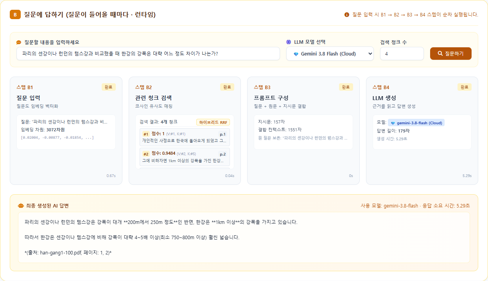
참조 정답
파리의 센강이나 런던의 템스강은 폭이 대개 200m에서 250m 정도로 우리나라 안양천이나 탄천 수준에 불과하지만, 한강은 1km 이상의 강폭을 가지고 있어 거의 바다라고 할 수 있을 정도로 거대합니다.
검색 청크 (top-4)
청크 1은 센강과 템스강의 폭(200~250m) 정보를, 청크 2는 한강의 폭(1km 이상) 정보를 담고 있어 정답 도출에 직접 유용하며, 청크 3과 4는 강폭 비교와 무관합니다.
Faithfulness 판정 (주장 3개)
- ✔ 파리의 센강이나 런던의 템스강은 강폭이 대개 200m에서 250m 정도이다.
- ✔ 한강은 1km 이상의 강폭을 가지고 있다.
- ✔ 한강은 센강이나 템스강에 비해 강폭이 대략 4~5배 이상(최소 750~800m 이상) 넓다.
Q02. 고대 중국 역사서와 삼국시대 각 나라(고구려, 백제, 신라)에서 한강을 각각 어떤 명칭으로 불렀는가?
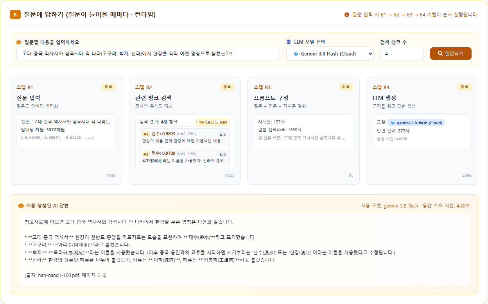
참조 정답
고대 중국 역사서에는 '띠 대' 자를 쓴 '대수(帶水)'로 표기되었으며, 삼국시대에 고구려는 '아리수(阿利水)', 백제는 '욱리하(郁利河)', 신라는 한강의 상류와 하류를 구분하여 각각 '이하(泥河)'와 '왕봉하(王逢河)'로 불렀습니다.
검색 청크 (top-4)
청크 1과 2는 고대 중국 역사서의 '대수' 및 고구려(아리수), 백제(욱리하), 신라(이하, 왕봉하)의 한강 명칭을 직접 포함하고 있으며, 청크 3과 4는 관련 없는 구간별 명칭 및 교량 정보만을 다룹니다.
Faithfulness 판정 (주장 5개)
- ✔ 고대 중국 역사서에서는 한강이 한반도 중앙을 가로지르는 모습을 표현하여 한강을 ‘대수(帶水)’라고 표기했다.
- ✔ 삼국시대 고구려는 한강을 ‘아리수(阿利水)’라고 불렀다.
- ✔ 삼국시대 백제는 한강을 ‘욱리하(郁利河)’라는 이름으로 사용했다.
- ✔ 백제는 이후 중국 동진과의 교류를 시작하던 시기부터 ‘한수(漢水)’ 또는 ‘한강(漢江)’이라는 이름을 사용했다고 추정된다.
- ✔ 삼국시대 신라는 한강의 상류와 하류를 구분하여 상류는 ‘이하(泥河)’, 하류는 ‘왕봉하(王逢河)’라고 불렀다.
Q03. 서울 구간에서 위치에 따라 다르게 불렸던 한강의 옛 명칭들(동호, 동작강, 노들강, 용호, 마포강, 서강 등)의 구간별 위치를 설명해 주세요.
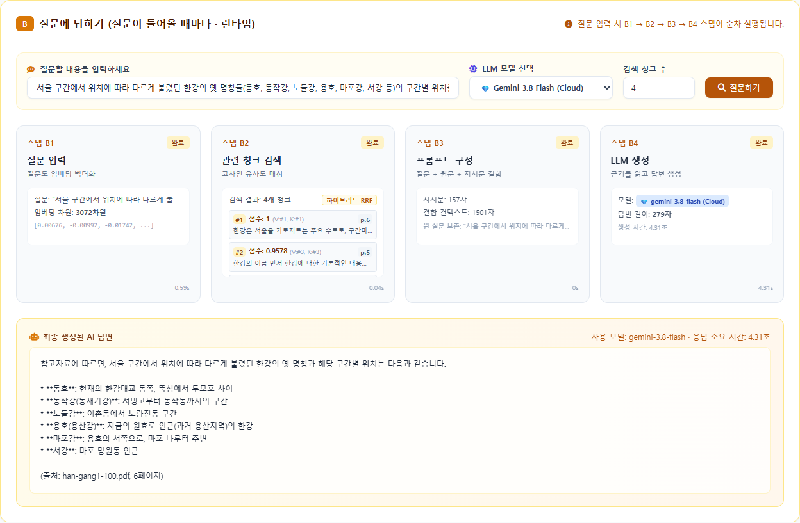
참조 정답
한강대교 동쪽 뚝섬에서 두모포 사이는 '동호', 서빙고부터 동작동까지는 '동작강(동재기강)', 이촌동에서 노량진동 구간은 '노들강', 원효로 인근 과거 용산 지역은 '용호(용산강)', 마포 나루터 주변은 '마포강', 마포 망원동 인근은 '서강'이라 불렸습니다.
검색 청크 (top-4)
청크 1은 질문에서 요구한 한강 구간별 옛 명칭과 그에 해당하는 위치 정보를 모두 정확히 포함하고 있으며, 나머지 청크들은 관련 세부 정보가 없습니다.
Faithfulness 판정 (주장 6개)
- ✔ 동호는 현재의 한강대교 동쪽, 뚝섬에서 두모포 사이 구간을 가리킨다.
- ✔ 동작강(동재기강)은 서빙고부터 동작동까지의 구간을 가리킨다.
- ✔ 노들강은 이촌동에서 노량진동 구간을 가리킨다.
- ✔ 용호(용산강)는 지금의 원효로 인근(과거 용산지역)의 한강을 가리킨다.
- ✔ 마포강은 용호의 서쪽으로, 마포 나루터 주변을 가리킨다.
- ✔ 서강은 마포 망원동 인근을 가리킨다.
Q04. 북한강과 남한강의 각각 발원지와 이들이 합류하여 서해로 흘러들기까지의 물길 경로 및 한강의 총길이는 어떻게 되는가?
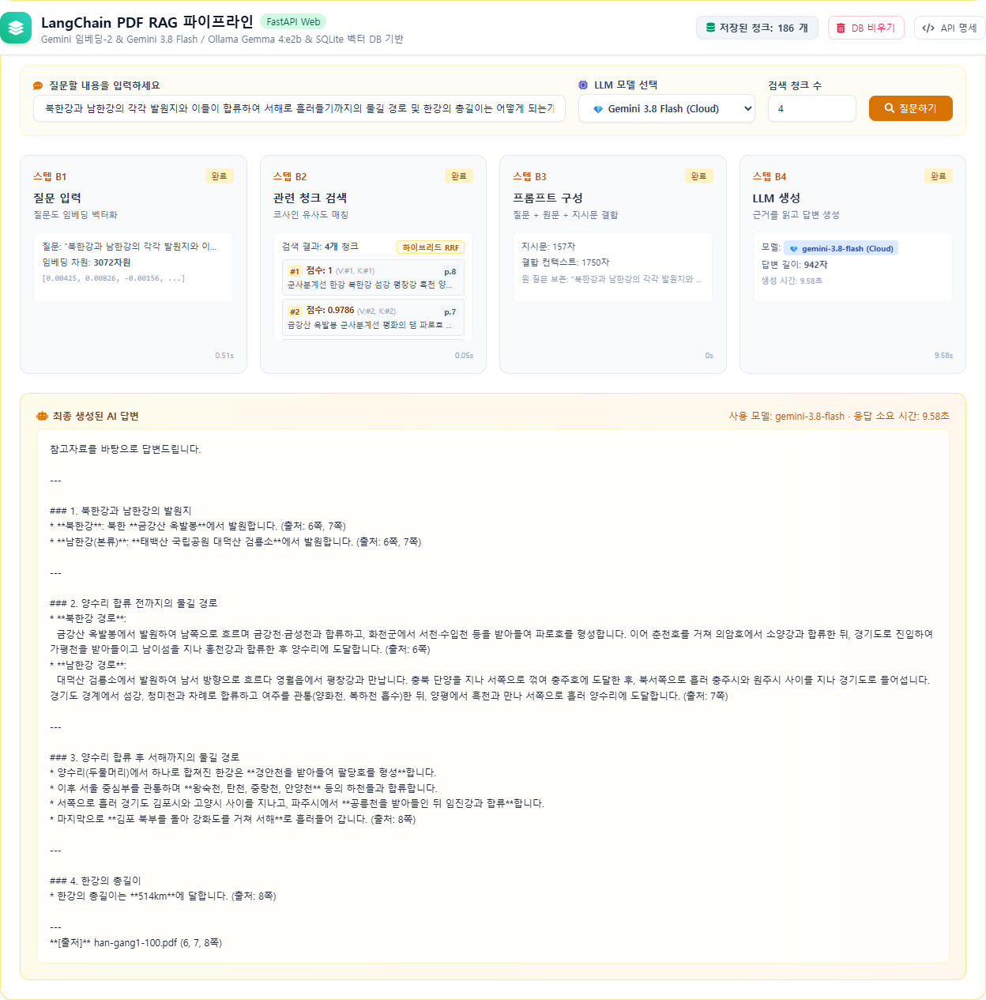
참조 정답
북한강은 북한 금강산 옥발봉에서 발원해 파로호, 춘천호, 의암호(소양강 합류)를 거쳐 남하하고, 남한강은 태백산 국립공원 대덕산 검룡소에서 발원해 영월(평창강 합류), 충주호, 여주, 양평을 거칩니다. 두 강은 양수리(두물머리)에서 합류하여 팔당호를 거쳐 서울을 관통하고, 임진강과 만나 김포 북부 조강 및 강화도를 거쳐 서해로 흘러가며 총길이는 514km입니다.
검색 청크 (top-4)
청크 1은 합류 후 서울 관통 및 서해 유입 경로와 총길이(514km), 청크 2는 남한강의 발원지와 경로, 청크 3은 두물머리 및 김포 북부 조강 명칭, 청크 4는 북한강의 발원지와 경로를 각각 직접 담고 있습니다.
Faithfulness 판정 (주장 14개)
- ✔ 북한강은 북한 금강산 옥발봉에서 발원한다.
- ✔ 한강의 본류인 남한강은 태백산 국립공원 대덕산 검룡소에서 발원한다.
- ✔ 북한강은 금강산 옥발봉에서 남쪽으로 흐르며 금강천·금성천과 합류하고, 화천군에서 서천·수입천 등을 받아들여 파로호를 형성한다.
- ✔ 북한강은 춘천호를 거쳐 의암호에서 소양강과 합류한다.
- ✔ 북한강은 경기도로 진입하여 가평천을 받아들이고 남이섬을 지나 홍천강과 합류한 후 양수리에 도달한다.
- ✔ 남한강은 대덕산 검룡소에서 남서 방향으로 흐르다 영월읍에서 평창강과 만난다.
- ✔ 남한강은 충북 단양을 지나 서쪽으로 꺾여 충주호에 도달한 후, 북서쪽으로 흘러 충주시와 원주시 사이를 지나 경기도로 진입한다.
- ✔ 남한강은 경기도 경계에서 섬강, 청미천과 차례로 합류하고 여주를 관통하며 양화천, 복하천을 흡수한다.
- ✔ 남한강은 양평에서 흑천과 만나 서쪽으로 흘러 양수리에 도달하여 북한강과 합류한다.
- ✔ 양수리(두물머리)에서 하나로 합쳐진 한강은 경안천을 받아들여 팔당호를 형성한다.
- ✔ 한강은 서울 중심부를 관통하며 왕숙천, 탄천, 중랑천, 안양천 등의 하천들과 합류한다.
- ✔ 한강은 서쪽으로 흘러 경기도 김포시와 고양시 사이를 지나고, 파주시에서 공릉천을 받아들인 뒤 임진강과 합류한다.
- ✔ 한강은 김포 북부를 돌아 강화도를 거쳐 서해로 흘러들어간다.
- ✔ 한강의 총길이는 514km에 달한다.
Q05. 신라 진흥왕이 한강 유역을 차지한 후 북한산 비봉에 순수비를 세운 역사적 배경과 저자가 서술한 감정적 이유는 무엇인가?
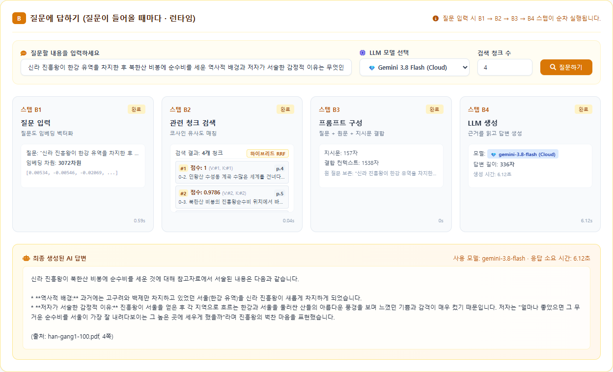
참조 정답
고구려와 백제만 차지하던 한강(서울)을 신라 진흥왕이 차지하게 되었을 때, 서울의 각 지역으로 흐르는 한강과 서울을 둘러싸고 있는 수려한 산들을 바라보며 느낀 감탄과 벅찬 감정 때문에 서울이 가장 잘 내려다보이는 북한산 비봉에 무거운 순수비를 세운 것으로 서술됩니다.
검색 청크 (top-4)
청크 1은 고구려와 백제가 차지하던 서울을 진흥왕이 얻은 배경과 북한산 비봉에 순수비를 세운 저자의 감정적 해석을 직접 담고 있으며, 나머지 청크는 관련 내용이 없습니다.
Faithfulness 판정 (주장 3개)
- ✔ 역사적 배경으로, 과거에는 고구려와 백제만 차지하고 있었던 서울(한강 유역)을 신라 진흥왕이 새롭게 차지하게 되었다.
- ✔ 저자가 서술한 감정적 이유로, 진흥왕이 서울을 얻은 후 각 지역으로 흐르는 한강과 서울을 둘러싼 산들의 풍경을 보며 느꼈던 기쁨과 감격이 매우 컸기 때문이다.
- ✔ 저자는 진흥왕의 마음에 대해 '얼마나 좋았으면 그 무거운 순수비를 서울이 가장 잘 내려다보이는 그 높은 곳에 세우게 했을까'라며 벅찬 마음을 표현했다.
Q06. 이 책에서 다루는 한강의 8개 다리는 무엇이며, 각각 어떤 역사적·공학적 대표 의미를 지니고 있는가?
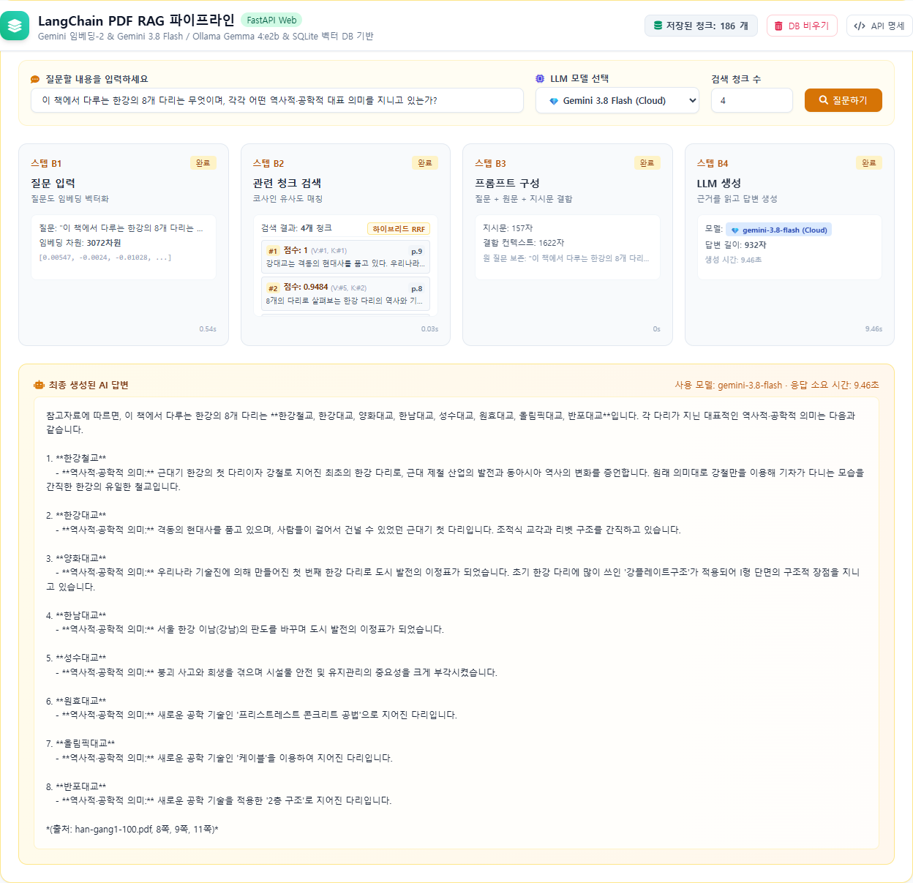
참조 정답
1. 양화대교: 국내 기술진이 최초로 만든 한강 다리이자 강플레이트 거더교, 2. 원효대교: 프리스트레스트 콘크리트(PSC) 기술로 지어진 최초의 다리, 3. 한강철교: 근대 제철기술로 세워진 근대기 최초의 철교, 4. 한강대교: 사람이 지나다닐 수 있는 근대기 첫 인도교이자 리벳/조적식 교각 보존, 5. 반포대교: 최초의 2층 구조(잠수교 포함) 강박스 거더교, 6. 한남대교: 강남 개발과 경부고속도로를 연결한 물류의 축, 7. 성수대교: 붕괴 사고를 통한 시설물 유지관리 및 정밀안전진단 체계 정립 계기, 8. 올림픽대교: 한강 최초의 케이블 교량(사장교)입니다.
검색 청크 (top-4)
청크 1, 2, 4는 8개 다리의 명칭과 각각의 역사적·공학적 특징을 나누어 담고 있으며, 청크 3 역시 성수대교의 붕괴와 시설물 안전관리 체계 정립 계기라는 정답의 핵심 사실을 포함합니다.
Faithfulness 판정 (주장 15개)
- ✔ 이 책에서 다루는 한강의 8개 다리는 한강철교, 한강대교, 양화대교, 한남대교, 성수대교, 원효대교, 올림픽대교, 반포대교이다.
- ✔ 한강철교는 근대기 한강의 첫 다리이자 강철로 지어진 최초의 한강 다리이다.
- ✔ 한강철교는 근대 제철 산업의 발전과 동아시아 역사의 변화를 증언한다.
- ✔ 한강철교는 원래 의미대로 강철만을 이용해 기차가 다니는 모습을 간직한 한강의 유일한 철교이다.
- ✔ 한강대교는 격동의 현대사를 품고 있다.
- ✔ 한강대교는 사람들이 걸어서 건널 수 있었던(지나다닐 수 있는) 근대기 첫 다리이다.
- ✔ 한강대교는 조적식 교각과 리벳 구조를 간직하고 있다.
- ✔ 양화대교는 우리나라 기술진에 의해 만들어진 첫 번째 한강 다리이다.
- ✔ 양화대교는 도시 발전의 이정표가 되었다.
- ✔ 양화대교에는 초기 한강 다리에 많이 쓰인 강플레이트구조가 적용되어 I형 단면의 구조적 장점을 지니고 있다.
- ✔ 한남대교는 서울 한강 이남의 판도를 바꾸며 도시 발전의 이정표가 되었다.
- ✔ 성수대교는 붕괴 사고와 희생을 겪으며 시설물 안전 및 유지관리의 중요성을 크게 부각시켰다.
- ✔ 원효대교는 새로운 공학 기술인 프리스트레스트 콘크리트 공법으로 지어졌다.
- ✔ 올림픽대교는 새로운 공학 기술인 케이블을 이용하여 지어졌다.
- ✔ 반포대교는 새로운 공학 기술인 2층 구조로 지어졌다.
Q07. 양화대교가 건설 당시 '제2한강교'로 불렸던 이유와 애초에 계획된 주된 군사적 목적은 무엇인가?
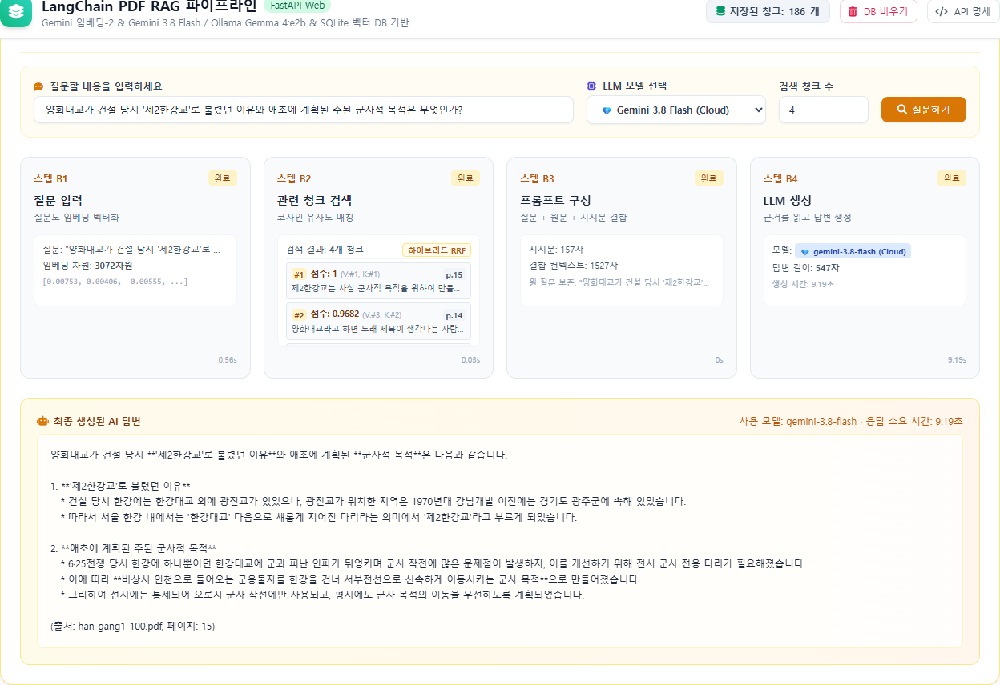
참조 정답
광진교가 당시 경기도 광주군에 속해 있었기 때문에 서울 한강에 한강대교 다음으로 새롭게 지어진 다리라 하여 '제2한강교'로 불렸습니다. 6·25전쟁 당시 피난 인파와 군 작전이 엉킨 경험을 바탕으로, 비상시 인천으로 들어오는 군용물자를 신속하게 한강을 건너 서부전선으로 이동시키기 위해 전시에 군사 작전에만 통제·사용할 군사 전용 목적을 염두에 두고 건설되었습니다.
검색 청크 (top-4)
청크 1은 군사적 목적에 대한 핵심 사실을, 청크 3은 제2한강교로 불리게 된 명칭 유래를 직접 포함하고 있습니다.
Faithfulness 판정 (주장 5개)
- ✔ 양화대교 건설 당시 한강에는 한강대교 외에 광진교가 있었으나, 광진교가 위치한 지역은 1970년대 강남개발 이전에는 경기도 광주군에 속해 있었다.
- ✔ 서울 한강 내에서 '한강대교' 다음으로 새롭게 지어진 다리라는 의미에서 '제2한강교'라고 부르게 되었다.
- ✔ 6·25전쟁 당시 한강에 하나뿐이던 한강대교에 군과 피난 인파가 뒤엉키며 군사 작전에 많은 문제점이 발생하자, 이를 개선하기 위해 전시 군사 전용 다리가 필요해졌다.
- ✔ 비상시 인천으로 들어오는 군용물자를 한강을 건너 서부전선으로 신속하게 이동시키는 군사 목적으로 제2한강교가 만들어졌다.
- ✔ 전시에는 통제되어 오로지 군사 작전에만 사용되고, 평시에도 군사 목적의 이동을 우선하도록 계획되었다.
Q08. 양화대교를 설계한 임봉건 대표의 배경과 그가 현대건설, 현대엔지니어링에서 맡았던 역할은 무엇인가?
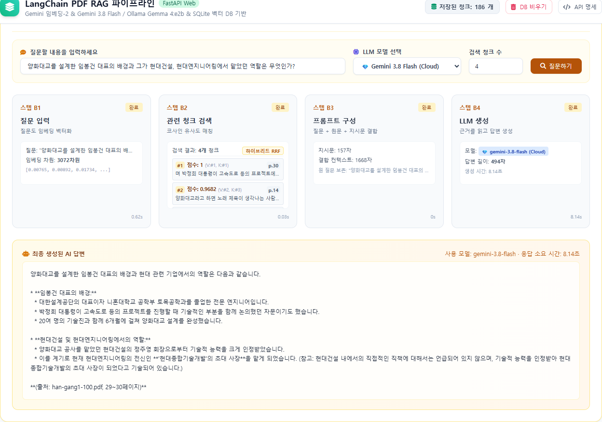
참조 정답
임봉건 대표는 니혼대학교 공학부 토목공학과를 졸업한 엔지니어로, 박정희 대통령에게 고속도로 프로젝트 등의 기술 자문을 했습니다. 한강대교를 복구해 본 현대건설이 양화대교 시공을 맡았으며, 정주영 회장에게 기술적 능력을 인정받아 현대엔지니어링의 전신인 현대종합기술개발의 초대 사장이 되었습니다.
검색 청크 (top-4)
청크 1은 박정희 대통령 기술 자문 및 현대종합기술개발 초대 사장 취임 사실을 포함하고, 청크 4는 니혼대학교 토목공학과 졸업 배경을 담고 있어 유용합니다.
Faithfulness 판정 (주장 6개)
- ✔ 임봉건은 대한설계공단의 대표이다.
- ✔ 임봉건은 니혼대학교 공학부 토목공학과를 졸업한 엔지니어이다.
- ✔ 임봉건은 박정희 대통령이 고속도로 등의 프로젝트를 진행할 때 기술적인 부분을 함께 논의했던 자문이었다.
- ✔ 임봉건 대표는 20여 명의 기술진과 함께 6개월에 걸쳐 양화대교 설계를 완성했다.
- ✔ 양화대교 공사를 맡았던 현대건설의 정주영 회장은 임봉건 대표의 기술적 능력을 인정했다.
- ✔ 임봉건 대표는 현대엔지니어링의 전신인 현대종합기술개발의 초대 사장이 되었다.
Q09. 양화진 인근의 '잠두봉'이 '절두산'이라는 비극적인 이름으로 바뀌어 불리게 된 역사적 배경(병인박해)은 무엇인가?
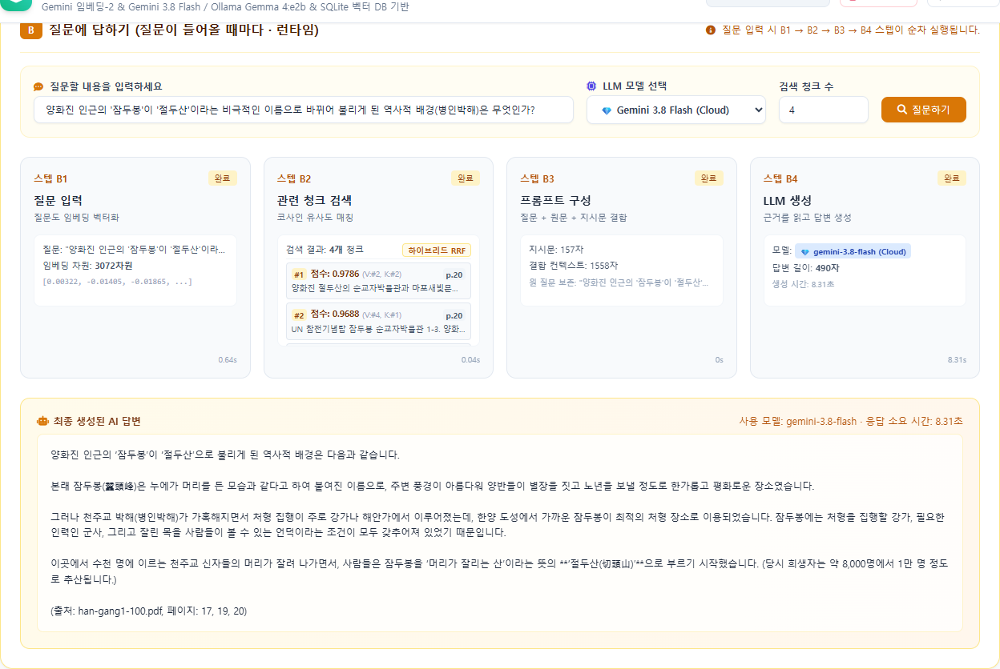
참조 정답
누에 머리를 닮아 '잠두봉'이라 불리던 곳이었으나, 1866년 병인박해와 병인양요 이후 흥선대원군이 양이(서양)의 발자국으로 더럽혀진 땅을 서학도들의 피로 씻겠다며 수천 명의 천주교 신자들의 목을 잘라 처형하면서 '머리가 잘리는 산'이라는 뜻의 '절두산(切頭山)'으로 불리게 되었습니다.
검색 청크 (top-4)
청크 3은 천주교 박해로 수천 명의 머리가 잘려 잠두봉이 '절두산'이 된 배경을, 청크 4는 원래 이름인 '잠두봉'의 유래를 직접 설명하고 있어 유용합니다.
Faithfulness 판정 (주장 7개)
- ✔ 잠두봉(蠶頭峰)은 누에가 머리를 든 모습과 같다고 하여 붙여진 이름이다.
- ✔ 잠두봉 주변 풍경이 아름다워 양반들이 별장을 짓고 노년을 보낼 정도로 한가롭고 평화로운 장소였다.
- ✔ 천주교 박해(병인박해)가 가혹해지면서 처형 집행이 주로 해안가나 강가에서 이루어졌다.
- ✔ 한양 도성에서 가까운 잠두봉이 최적의 처형 장소로 이용되었다.
- ✔ 잠두봉에는 처형을 집행할 장소인 강가, 필요한 인력인 군사, 잘린 목을 사람들이 볼 수 있는 언덕이라는 조건이 모두 갖추어져 있었다.
- ✔ 수천 명에 이르는 신자들의 머리가 잘려 나가면서 사람들은 잠두봉을 '머리가 잘리는 산'이라는 뜻의 '절두산(切頭山)'으로 부르기 시작했다.
- ✔ 당시 희생자는 약 8,000명에서 1만 명 정도로 추산된다.
Q10. 강플레이트 거더교에서 철판 단면을 'I형'으로 만드는 공학적 이유(모멘트와 휨 저항)를 설명해 주세요.
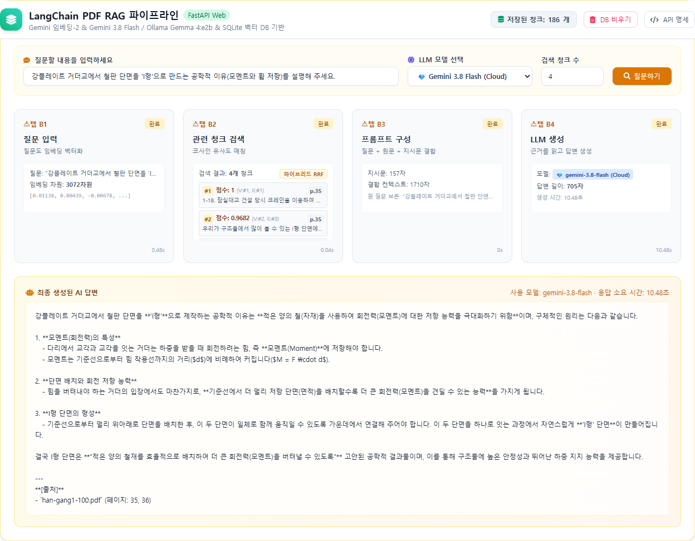
참조 정답
거더가 휨을 받을 때 회전력(모멘트)에 저항해야 하는데, 기준선(중립축)에서 단면의 면적을 멀리 배치할수록 회전 저항 능력이 커집니다. 따라서 기준선에서 먼 상하 플랜지에 면적을 집중 배치하고 이를 하나의 일체로 묶기 위해 얇은 웹으로 연결함으로써 적은 철을 사용해 가장 효율적으로 큰 휨모멘트에 저항할 수 있도록 만든 것이 I형 단면입니다.
검색 청크 (top-4)
청크 2는 거더가 회전력(모멘트)에 저항한다는 개념을 설명하고, 청크 3은 기준선에서 단면을 멀리 배치해 적은 철로 큰 모멘트에 저항하는 I형 단면의 원리를 직접 설명합니다.
Faithfulness 판정 (주장 6개)
- ✔ 강플레이트 거더교에서 철판 단면을 'I형'으로 제작하는 공학적 이유는 적은 양의 철을 사용하여 회전력(모멘트)에 대한 저항 능력을 극대화하기 위함이다.
- ✔ 다리에서 교각과 교각을 잇는 거더는 회전하려는 힘인 모멘트(Moment)에 저항해야 한다.
- ✔ 모멘트(M)는 기준선으로부터 힘(F) 작용선까지의 거리(d)에 비례하여 커진다(M = F · d).
- ✔ 거더의 입장에서 기준선에서 더 멀리 저항 단면을 배치할수록 더 큰 회전력(모멘트)을 견딜 수 있는 능력을 가지게 된다.
- ✔ 두 단면이 일체로 움직일 수 있도록 하나로 연결하는 과정에서 자연스럽게 'I형' 단면이 형성된다.
- ✔ I형 단면은 구조물에 높은 안정성과 뛰어난 하중 지지 능력을 제공한다.
Q11. I형 거더에서 스티프너(stiffener, 수직보강재)가 수행하는 두 가지 핵심 역할은 무엇인가?
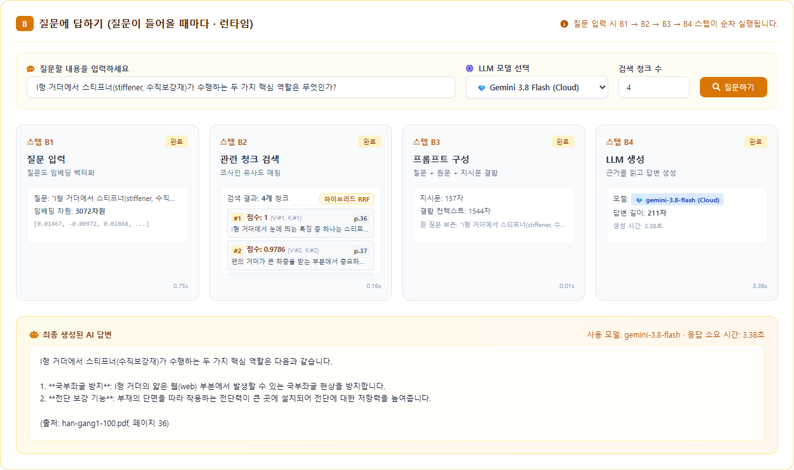
참조 정답
첫째, I형 거더의 얇은 복부판(웹, web)에서 큰 압축력에 의해 판이 찌그러지는 '국부좌굴'을 방지합니다. 둘째, 부재의 단면을 따라 작용하는 부재력인 전단력에 저항력을 높여주는 '전단 보강' 기능을 합니다.
검색 청크 (top-4)
청크 1은 스티프너의 두 가지 핵심 역할인 웹의 국부좌굴 방지와 전단 보강 기능을 직접 명시하고 있으며, 나머지 청크는 좌굴 개념 설명이나 거더의 구조적 특성만을 다룹니다.
Faithfulness 판정 (주장 2개)
- ✔ 스티프너는 I형 거더의 얇은 웹(web) 부분에서 발생할 수 있는 국부좌굴 현상을 방지한다.
- ✔ 스티프너는 부재의 단면을 따라 작용하는 전단력이 큰 곳에 설치되어 전단에 대한 저항력을 높여주는 전단 보강 기능을 한다.
Q12. 오일러 보(Euler beam) 이론에서 수직 하중을 받는 기둥의 좌굴(Buckling) 형상과 알루미늄 캔을 빠르게 밟아 찌그러뜨리는 현상은 어떤 상관관계가 있는가?
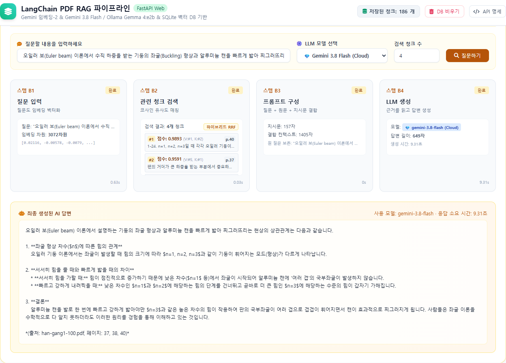
참조 정답
오일러 보 이론에서 좌굴 처짐식은 y=A·sin(λ·x)로 나타나며 하중(λ=(n·π)/L)이 커짐에 따라 n=1, 2, 3 등 사인 곡선의 반파(파동) 수가 늘어납니다. 알루미늄 캔을 서서히 누르면 n=1 모드로 찌그러지지만, 발로 한 번에 빠르고 강하게 내려찍으면 n=1, n=2 하중을 단번에 건너뛰어 높은 차수인 n=3 이상의 하중이 가해져 여러 겹의 국부좌굴 주름이 발생하게 됩니다.
검색 청크 (top-4)
청크 1은 오일러 기둥의 n차 모드와 캔을 빠르게 밟아 n=3 하중을 가해 여러 겹 좌굴이 생기는 인과관계를 직접 다루고, 청크 3은 오일러 보의 좌굴 처짐식(y=A·sin(λ·x))을 설명하여 유용하며, 청크 2와 4는 단순 예시 언급 및 캡션에 불과합니다.
Faithfulness 판정 (주장 5개)
- ✔ 오일러 기둥 이론에서는 좌굴이 발생할 때 힘에 따라 n=1, n=2, n=3과 같이 기둥이 휘어지는 모양(모드)이 다르게 나타난다.
- ✔ 알루미늄 캔에 서서히 힘을 가하면 여러 겹의 국부좌굴이 발생하지 않는다.
- ✔ 캔을 빠르고 강하게 내려찍으면 n=1과 n=2에 해당하는 힘을 건너뛰어 갑자기 n=3에 해당하는 힘이 가해진다.
- ✔ 알루미늄 캔을 빠르고 강하게 밟아야 n=3 수준의 힘이 작용하여 여러 겹(겹겹이)의 판의 국부좌굴이 발생하며 찌그러진다.
- ✔ 사람들은 좌굴에 대해 수학적으로 정확히 알지 못하더라도 경험을 통해 이러한 원리를 이해하고 있다.
Q13. 양화대교는 경인 아라뱃길(경인 운하) 계획과 관련하여 교각에 어떤 구조 개선 공사를 진행했으며, 그 과정에서 발생한 사회적 논란은 무엇인가?
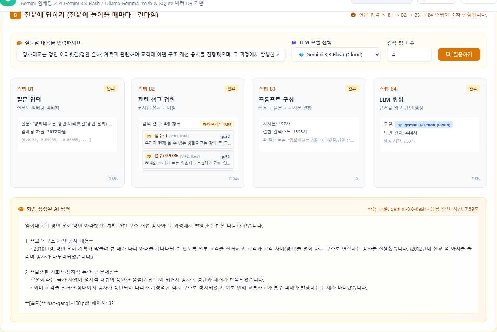
참조 정답
큰 배가 지나갈 수 있도록 일부 교각을 철거하고 경간이 넓은 아치 구조로 연결하는 공사를 진행했습니다. 그러나 '운하' 사업에 대한 정치적 대립으로 공사가 중단과 재개를 반복하며 가교 구간의 사고 위험이 커졌고, 무면허 철거업체가 교각 철거 폐기물을 한강에 무단 투기하여 현장소장이 구속되고 공무원들이 입건되는 사건이 발생했습니다.
검색 청크 (top-4)
청크 1은 경인 운하 계획에 따른 교각 철거 및 아치 구조 공사 내용과 정치적 대립으로 인한 공사 중단 및 사고 위험 등 참조 정답의 핵심 사실을 직접 포함하고 있으나, 나머지 청크들은 다른 시기의 보수 공사나 무관한 내용을 다룹니다.
Faithfulness 판정 (주장 4개)
- ✔ 2010년경 경인 운하 계획과 맞물려 큰 배가 다리 아래를 지나다닐 수 있도록 일부 교각을 철거하고 경간을 넓혀 아치 구조로 연결하는 공사를 진행했다.
- ✔ 2012년에 신교 쪽 아치를 올리며 양화대교 구조 개선 공사가 마무리되었다.
- ✔ ‘운하’라는 국가 사업이 정치적 대립의 중요한 키워드가 되면서 공사의 중단과 재개가 반복되었다.
- ✔ 이미 교각을 철거한 상태에서 기형적인 임시 구조로 인해 교통사고와 홍수 피해가 발생하는 문제가 나타났다.
Q14. 선유도공원과 양화한강공원을 잇는 선유교는 철근 없이 어떤 신소재 기술을 적용하여 얇고 날렵한 아치 구조를 구현했는가?
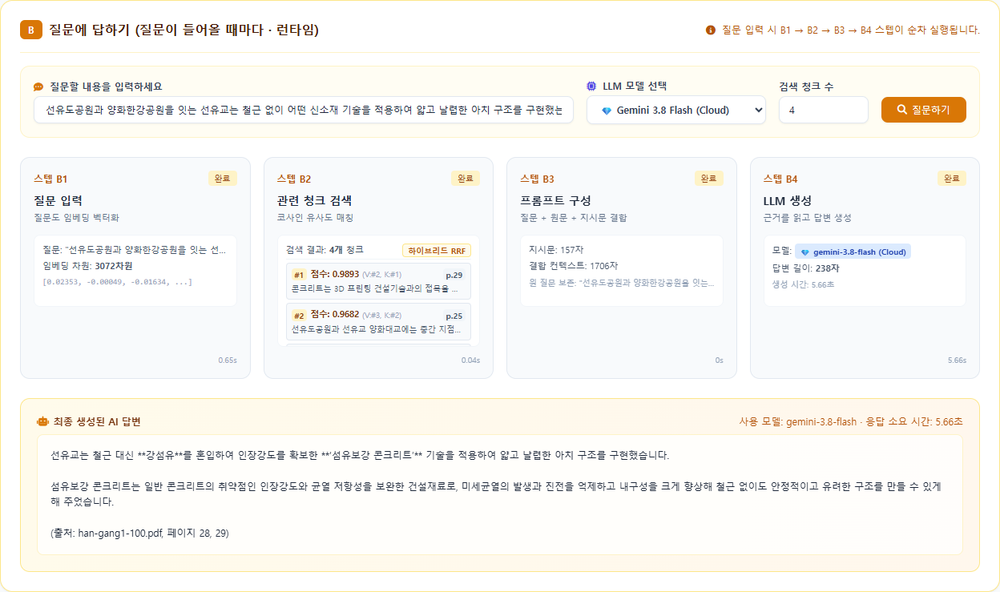
참조 정답
선유교는 철근을 사용하지 않고 콘크리트에 강섬유, 탄소섬유, 합성섬유 등을 혼입한 '섬유보강 콘크리트'를 사용하여 인장강도와 균열 저항성을 획기적으로 확보함으로써 얇고 날렵한 보행 전용 아치 구조를 완성했습니다.
검색 청크 (top-4)
청크 1은 섬유보강 콘크리트를 통한 아치 구조 구현 사실을 명시하고, 청크 4는 철근 대신 사용된 섬유보강 콘크리트의 원리와 종류(강섬유, 탄소섬유 등)를 상세히 설명하여 직접적으로 유용합니다.
Faithfulness 판정 (주장 4개)
- ✔ 선유교는 철근 대신 강섬유를 혼입하여 인장강도를 확보한 '섬유보강 콘크리트' 기술을 적용했다.
- ✔ 선유교는 섬유보강 콘크리트 기술을 통해 얇고 날렵한 아치 구조를 구현했다.
- ✔ 섬유보강 콘크리트는 일반 콘크리트의 취약점인 인장강도와 균열 저항성을 보완한 건설재료이다.
- ✔ 섬유보강 콘크리트는 미세균열의 발생과 진전을 억제하고 내구성을 크게 향상해 철근 없이도 안정적이고 유려한 구조를 만들 수 있게 해 준다.
Q15. 영화 <괴물>에서 괴물이 숨어 있던 콘크리트 터널 공간의 실제 배경이 된 서울의 복개 하천은 무엇이며, 그 하천의 발원지와 경로는 어떠한가?
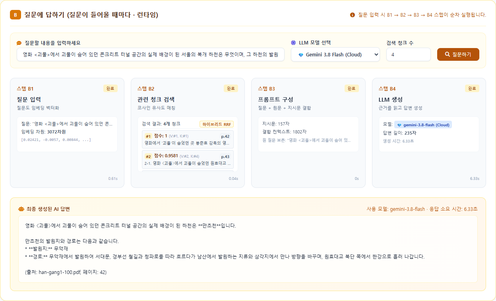
참조 정답
영화의 배경 공간은 '만초천(욱천)'이 복개된 구간입니다. 만초천은 무악재에서 발원하여 서대문, 경부선 철길과 청파로를 따라 흐르다가 남산에서 발원하는 지류와 삼각지에서 만나 방향을 틀어 원효대교 북단 쪽에서 한강으로 흘러들어 가는 하천입니다.
검색 청크 (top-4)
청크 1은 영화 <괴물>의 배경인 만초천과 그 발원지(무악재) 및 전체 흐름 경로를 모두 담고 있으며, 청크 2는 해당 하천의 명칭인 '만초천'과 '욱천'을 명시하여 직접 유용합니다.
Faithfulness 판정 (주장 5개)
- ✔ 영화 〈괴물〉에서 괴물이 숨어 있던 콘크리트 터널 공간의 실제 배경이 된 하천은 만초천이다.
- ✔ 만초천의 발원지는 무악재이다.
- ✔ 만초천은 무악재에서 발원하여 서대문, 경부선 철길과 청파로를 따라 흐른다.
- ✔ 만초천은 남산에서 발원하는 지류와 삼각지에서 만나 방향을 바꾼다.
- ✔ 만초천은 원효대교 북단 쪽에서 한강으로 흘러 나간다.
Q16. '효창공원'의 원래 명칭과 조선시대 유래, 그리고 일제강점기와 해방 이후 이승만·박정희 정권 하에서 겪은 수난사는 무엇인가?
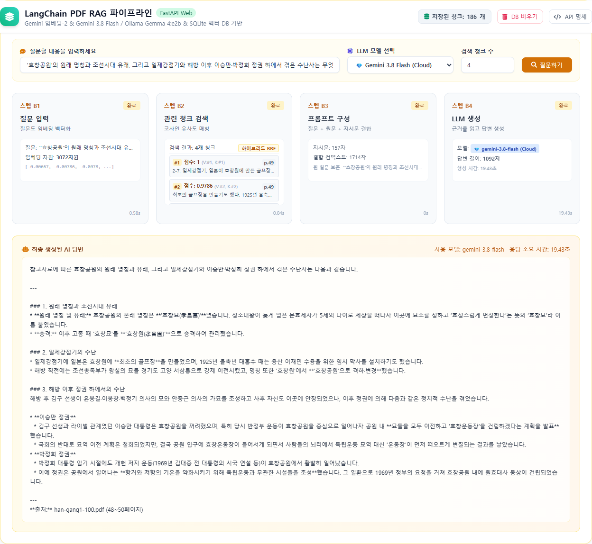
참조 정답
본래 정조의 장남 문효세자의 묘소인 '효창원'이었으나 일제강점기에 청일전쟁 숙영지, 최초 골프장, 수해 이재민 수용소 등으로 훼손된 후 묘가 서삼릉으로 강제 이전되었습니다. 해방 후 김구 선생이 독립운동가들의 묘역을 조성했으나, 이승만 정권은 반정부 운동을 의식해 묘역 이전을 꾀하다 축구장인 효창운동장을 지었고, 박정희 정권은 개헌 저지 운동을 잠재우기 위해 독립운동과 무관한 원효대사 동상을 건립했습니다.
검색 청크 (top-4)
청크 1은 이승만 정권의 묘역 이전 시도와 운동장 계획, 청크 2는 일제강점기 훼손 및 서삼릉 이전과 해방 후 묘역 조성, 청크 3은 정조의 문효세자 묘소로서의 유래, 청크 4는 박정희 정권의 원효대사 동상 건립 배경 등 핵심 사실을 나누어 담고 있습니다.
Faithfulness 판정 (주장 14개)
- ✔ 효창공원의 본래 명칭은 정조대왕 시절 문효세자의 묘소로 정해진 '효창묘(孝昌墓)'였다.
- ✔ 문효세자가 5세의 나이로 세상을 떠나자 정조대왕이 '효성스럽게 번성한다'는 뜻의 '효창'이라는 이름을 붙였다.
- ✔ 고종 때 '효창묘'를 '효창원'으로 승격하여 관리했다.
- ✔ 일제강점기에 일본은 효창원에 최초의 골프장을 만들었다.
- ✔ 1925년 을축년 대홍수 때 효창원에 용산 이재민을 수용하기 위한 임시 막사가 설치되었다.
- ✔ 해방 직전 조선총독부가 왕실의 묘를 경기도 고양 서삼릉으로 이전하고 '효창원'을 '효창공원'으로 명칭을 변경했다.
- ✔ 해방 후 김구 선생이 윤봉길, 이봉창, 백정기 의사의 묘와 안중근 의사의 가묘를 효창공원에 조성했고, 사후 김구 선생 본인도 이곳에 묻혔다.
- ✔ 이승만 대통령은 김구 선생과 라이벌 관계였으며 효창공원을 싫어했다.
- ✔ 이승만 정권 시절 반정부 운동이 효창공원을 중심으로 일어나자 묘를 모두 이전하고 효창운동장을 건립하겠다는 계획을 발표했다.
- ✔ 국회의 반대로 묘역 이전 계획은 철회되었으나, 결국 효창공원 입구에 효창운동장이 건립되었다.
- ✔ 효창운동장 건립 이후 사람들에게 '효창'이라는 단어를 들으면 '운동장'이 먼저 생각나게 되는 효과를 가져왔다.
- ✔ 박정희 대통령 임기 시절에도 효창공원에서 개헌 저지 운동(1969년 김대중 시국 연설 등)이 일어났다.
- ✔ 박정희 정권은 효창공원에서 일어나는 항거와 저항의 기운을 없애고자 독립운동과 무관한 시설들을 조성했다.
- ✔ 1969년 정부의 건립 요청에 따라 효창공원 내에 원효대사 동상이 건립되었다.
Q17. 효창공원의 삼의사 묘역에 안장된 3명의 독립운동가는 누구이며, 가묘로 남아있는 인물은 누구인가?
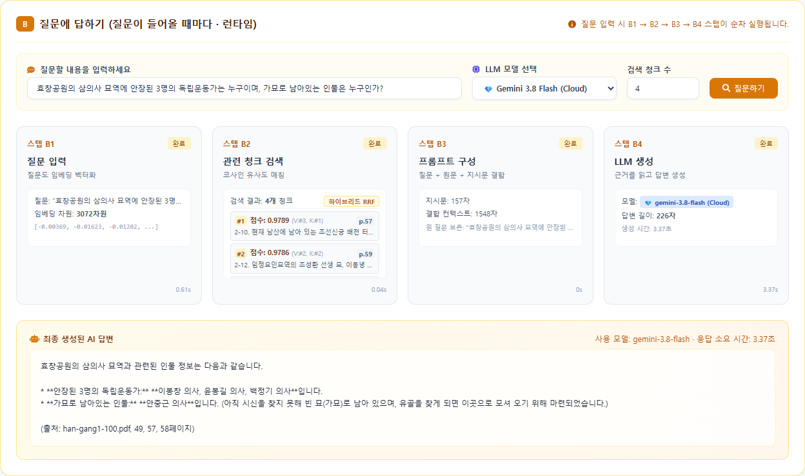
참조 정답
삼의사 묘역에 실제 유해가 안장된 세 인물은 이봉창 의사, 윤봉길 의사, 백정기 의사이며, 맨 왼쪽에 시신을 아직 찾지 못해 비어 있는 가묘의 주인은 안중근 의사입니다.
검색 청크 (top-4)
청크 1은 가묘의 주인공(안중근 의사)을 다루고, 청크 3과 4는 삼의사에 안장된 3명(이봉창, 윤봉길, 백정기)과 가묘의 인물(안중근)을 모두 직접 명시하고 있으나, 청크 2는 관련 핵심 사실이 없습니다.
Faithfulness 판정 (주장 4개)
- ✔ 효창공원의 삼의사 묘역에 안장된 3명의 독립운동가는 이봉창 의사, 윤봉길 의사, 백정기 의사이다.
- ✔ 효창공원의 삼의사 묘역에 가묘로 남아있는 인물은 안중근 의사이다.
- ✔ 안중근 의사는 아직 시신(유골)을 찾지 못해 빈 묘(가묘)로 남아 있다.
- ✔ 안중근 의사의 가묘는 유골을 찾게 되면 이곳으로 모셔 오기 위해 마련되었다.
Q18. 조슈번 출신인 야마가타 아리토모가 주도한 일본 군국주의 정책(통수권 독립)과 이토 히로부미의 노선 차이는 무엇이었는가?
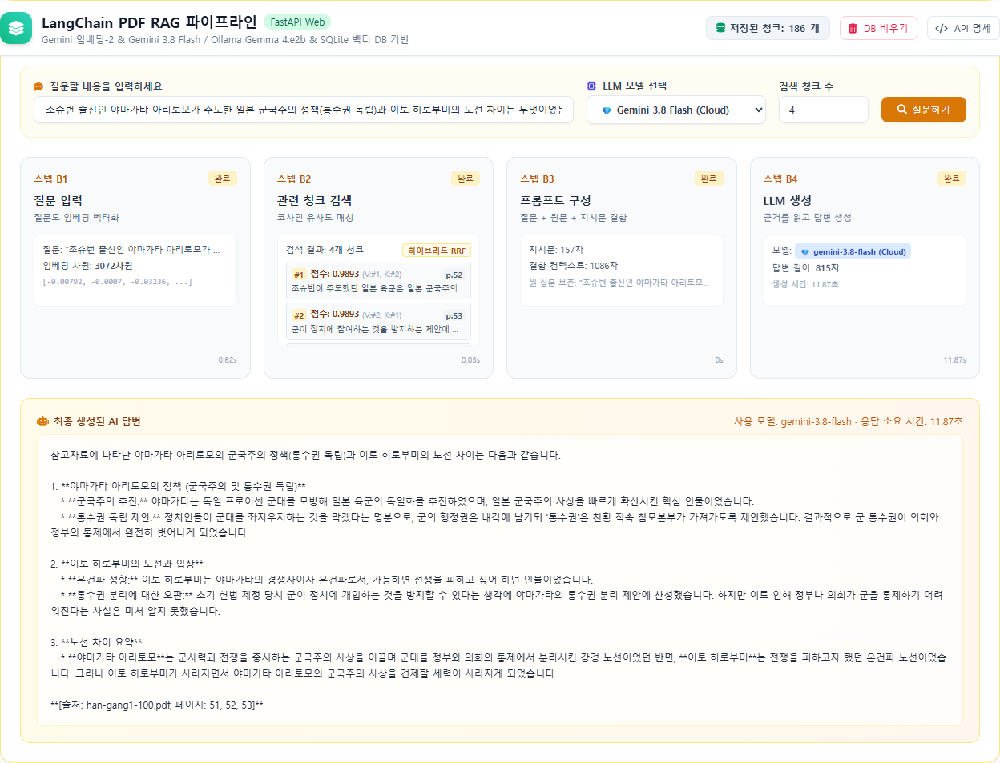
참조 정답
야마가타 아리토모는 프로이센 군대를 모방하여 군의 행정권은 내각에 두되 통수권은 천황 직속 참모본부로 분리시켜 의회나 정부가 군을 통제할 수 없게 만들어 군국주의로 치닫게 했습니다. 반면 이토 히로부미는 문민정치 전통을 강화하고 외교를 통한 평화적 해결을 선호했던 온건파로, 이토의 사망은 일본 내에서 군부의 폭주를 막을 유일한 브레이크가 사라진 계기가 되었습니다.
검색 청크 (top-4)
청크 1과 2는 프로이센식 통수권 분리와 온건파인 이토 히로부미의 사망 후 군국주의 폭주 등 핵심 사실을 직접 포함하고 있으며, 청크 3과 4는 단순 개념 정의나 배경 설명에 불과합니다.
Faithfulness 판정 (주장 8개)
- ✔ 야마가타 아리토모는 독일 프로이센 군대를 모방하여 일본 육군의 독일화를 적극적으로 추진했다.
- ✔ 야마가타 아리토모는 일본 군국주의 사상을 일본에 빠르게 퍼지게 한 주요 인물이었다.
- ✔ 야마가타는 정치인들이 군대를 좌지우지하는 것을 방지하고자 군의 행정권은 내각에 남기고 통수권은 천황 직속 참모본부에서 가져가는 안을 제안했다.
- ✔ 이로 인해 군 통수권이 의회나 정부의 손에서 벗어나 통제하기 어렵게 되었다.
- ✔ 이토 히로부미는 야마가타의 경쟁 관계에 있던 인물이자 온건파로, 가능하면 전쟁을 피하고 싶어 했다.
- ✔ 이토 히로부미는 초기 헌법을 만들 당시 군이 정치에 참여하는 것을 방지한다는 생각에 야마가타의 제안에 찬성했다.
- ✔ 이토 히로부미는 군 통수권 분리로 인해 의회나 정부가 군을 통제하기 어려워진다는 점을 알지 못했다.
- ✔ 이토 히로부미가 사라지면서 야마가타 아리토모의 군국주의 사상을 막을 세력이 사라졌다.
Q19. 원효대교가 국내 최초의 민간투자사업으로 지어진 후 유료 통행료 징수를 포기하고 서울시에 기부채납하게 된 배경은 무엇인가?
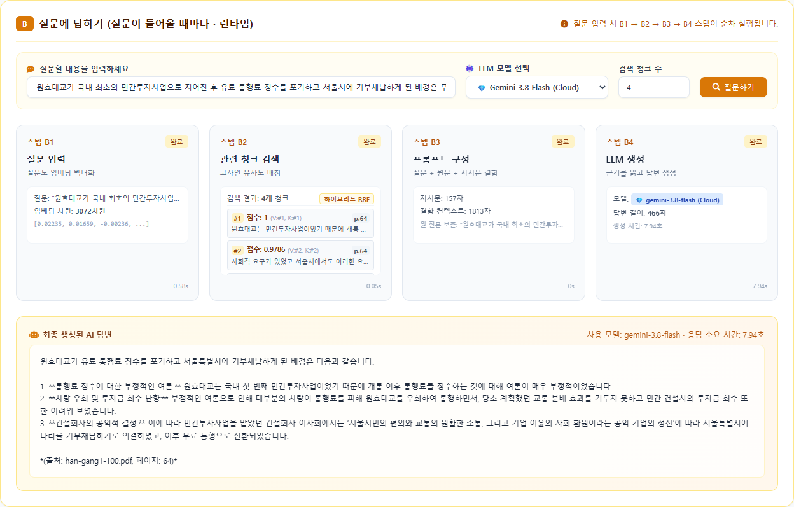
참조 정답
개통 후 통행료를 징수하자 여론이 극히 부정적이었고 대부분의 차량이 원효대교를 우회하여 통행료 수입을 통한 투자금 회수가 어려워졌습니다. 이에 시공 건설회사(동아건설) 이사회에서 공익 정신 및 교통 원활화를 명분으로 서울특별시에 다리를 기부채납하기로 의결하여 무료 통행으로 전환되었습니다.
검색 청크 (top-4)
청크 1은 통행료 징수에 따른 부정적 여론, 차량 우회로 인한 투자금 회수 난항, 건설사 이사회의 기부채납 의결 등 참조 정답의 핵심 배경을 모두 담고 있으며, 나머지 청크는 관련 배경 사실을 포함하지 않습니다.
Faithfulness 판정 (주장 4개)
- ✔ 원효대교는 국내 첫 번째 민간투자사업이었기 때문에 개통 이후 통행료 징수에 대한 여론이 매우 부정적이었다.
- ✔ 대부분의 차량이 통행료를 피해 원효대교를 우회하면서 계획했던 교통 분배와 건설사의 투자금 회수가 어려워 보였다.
- ✔ 민간투자사업을 맡았던 건설회사 이사회에서 '서울시민의 편의와 교통의 원활한 소통, 그리고 기업 이윤의 사회 환원이라는 공익 기업의 정신'에 따라 서울특별시에 기부채납하기로 의결하였다.
- ✔ 기부채납 의결 이후 원효대교는 무료 통행으로 전환되었다.
Q20. 프리스트레스트 콘크리트(PSC) 공법의 구조적 역학 원리(압축력과 인장력의 상쇄)를 설명해 주세요.
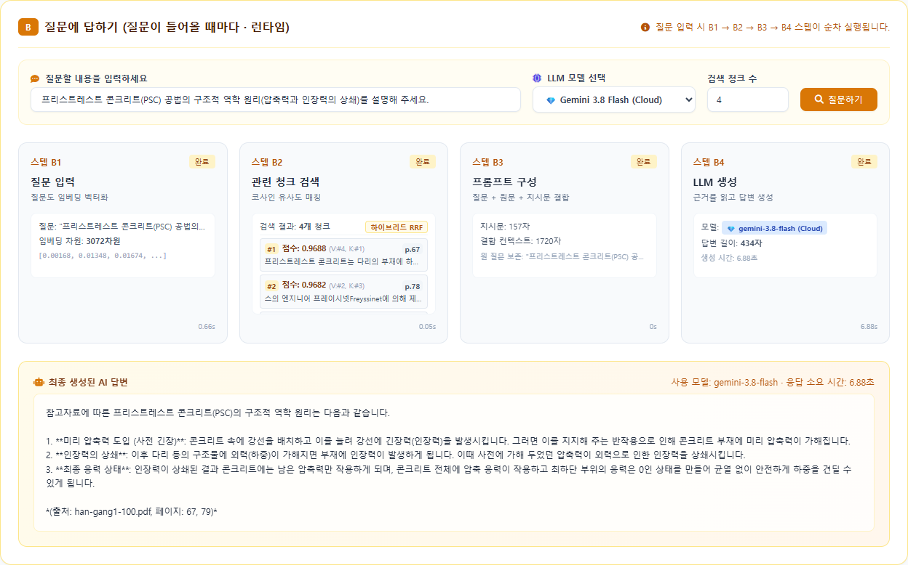
참조 정답
콘크리트는 압축력에는 강하지만 인장강도는 거의 없습니다. 외력이 작용하면 부재 하부에 큰 인장응력이 생겨 균열이 발생하므로, 하중이 가해지기 전에 콘크리트 내부에 배치한 고강도 강선을 당겨 반작용으로 콘크리트에 미리 큰 압축응력(프리스트레스)을 부여합니다. 이후 외력에 의해 하부에 인장력이 작용하더라도 미리 준 압축력과 상쇄되어 인장응력이 0에 가깝거나 압축 상태를 유지하게 만드는 원리입니다.
검색 청크 (top-4)
청크 1과 3은 강선의 긴장력 반작용으로 콘크리트에 압축력을 주어 외력에 의한 인장력을 상쇄하고 응력을 0 또는 압축 상태로 만드는 역학적 원리를 직접 설명하고 있습니다.
Faithfulness 판정 (주장 7개)
- ✔ 콘크리트 속에 강선을 배치하고 이를 늘려 강선에 긴장력(인장력)을 발생시킨다.
- ✔ 강선의 긴장력을 지지해 주는 반작용으로 인해 콘크리트 부재에 미리 압축력이 가해진다.
- ✔ 구조물에 외력(하중)이 가해지면 부재에 인장력이 발생한다.
- ✔ 사전에 가해 두었던 압축력이 외력으로 인한 인장력을 상쇄시킨다.
- ✔ 인장력이 상쇄된 결과 콘크리트에는 인장력을 상쇄하고 남은 압축력만 작용하게 된다.
- ✔ 콘크리트 전체에 압축 응력이 작용하고 최하단 부위의 응력이 0인 상태를 만들 수 있다.
- ✘ 이로 인해 콘크리트가 균열 없이 안전하게 하중을 견딜 수 있게 된다.
⚠ 응력 상태를 조절하여 '균열 없이 안전하게 하중을 견딜 수 있게 된다'는 설명은 검색된 청크에 명시되어 있지 않습니다.
Q21. 영국의 에디스톤(Eddystone) 암초에 세워진 네 차례의 등대 중 존 스미튼(John Smeaton)이 지은 제4등대의 토목사적 의의와 구조적 특징은 무엇인가?
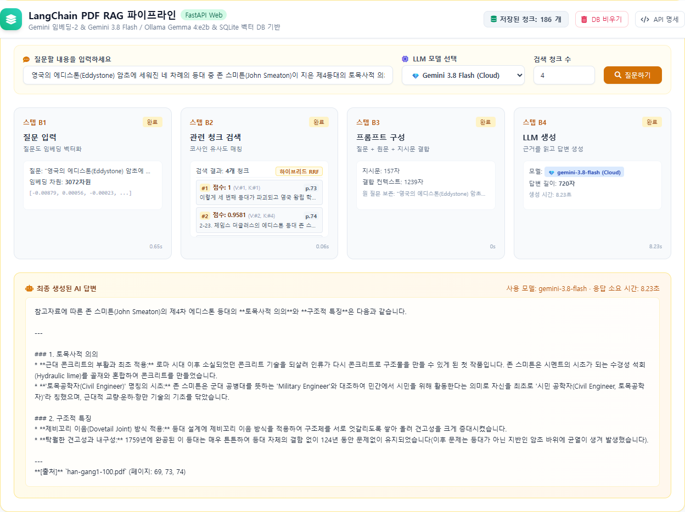
참조 정답
존 스미튼은 군사 공학과 대비되는 민간 분야 기술자로서 자신을 최초로 '시민 공학자(Civil Engineer)'라 칭했습니다. 그는 로마 시대 이후 단절되었던 수경성 석회를 골재와 혼합하여 근대적 콘크리트 기술을 부활시켰으며, 돌블록을 서로 맞물리게 하는 '제비꼬리 이음(Dovetail joint)' 방식을 채택해 등대 자체의 파손 없이 124년 동안 파도를 견뎌내는 탁월한 내구성을 증명했습니다.
검색 청크 (top-4)
청크 1은 '시민 공학자' 명칭 유래와 수경성 석회 콘크리트 개발 사실을, 청크 2는 제비꼬리 이음 방식과 124년간의 내구성 등 핵심 구조적 특징을 담고 있으나 나머지 청크는 관련 핵심 사실이 부족하거나 무관합니다.
Faithfulness 판정 (주장 7개)
- ✔ 존 스미튼의 제4차 에디스톤 등대는 로마 시대 이후 사용되지 않았던 콘크리트 기술을 되살려 인류가 다시 콘크리트로 구조물을 만들 수 있게 된 첫 작품이다.
- ✔ 존 스미튼은 시멘트의 시작점이 되는 수경성 석회(Hydraulic lime)를 골재와 혼합하여 콘크리트를 만들었다.
- ✔ 존 스미튼은 공병대를 뜻하는 'Military Engineer'와 대조하여 민간에서 시민을 위한다는 의미로 자신을 최초로 '시민 공학자(Civil Engineer, 토목공학자)'라고 칭했다.
- ✔ 존 스미튼은 근대적 교량·운하·항만 기술의 기초를 닦았다.
- ✔ 제4차 에디스톤 등대 설계에 제비꼬리 이음(Dovetail Joint) 방식을 적용하여 구조체를 서로 엇갈리도록 쌓음으로써 견고성을 증대시켰다.
- ✔ 1759년에 완공된 이 등대는 매우 튼튼하여 124년 동안 문제없이 사용되었다.
- ✔ 이후 발생한 문제는 등대 자체의 결함이 아니라 등대가 서 있는 암초 바위에 균열이 발견된 것이었다.
Q22. 초기 프리스트레스트 콘크리트가 실패했던 이유(크리프와 건조수축)와 이를 극복한 외젠 프레시네(Eugène Freyssinet)의 해결책은 무엇이었는가?
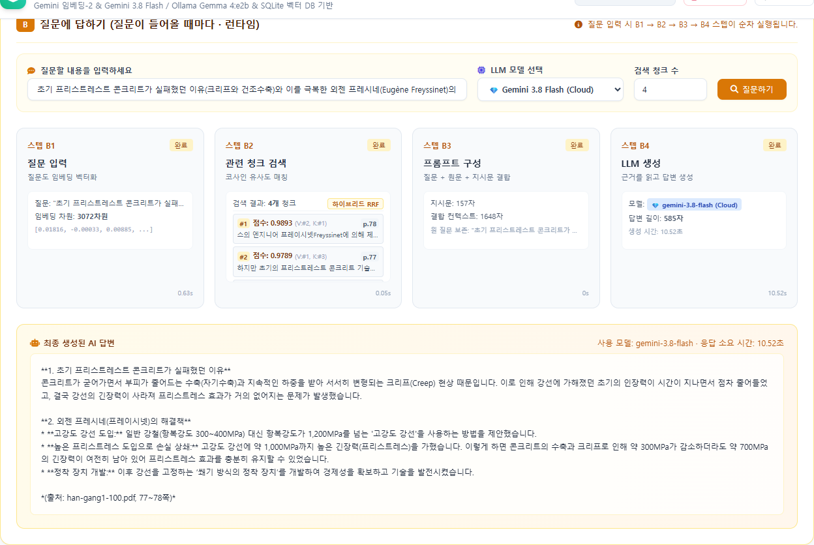
참조 정답
초기에는 콘크리트가 굳으며 줄어드는 건조수축과 지속적 하중으로 변형되는 크리프 현상 때문에 강선에 준 초기 인장력이 시간이 지나며 상쇄되어 사라지는 문제가 있었습니다. 프랑스의 프레시네는 항복강도가 1,200MPa가 넘는 고강도 강선을 사용하여 약 1,000MPa까지 인장력을 주어 수축과 크리프로 300MPa가 줄어도 700MPa의 장력이 유지되도록 함으로써 이 문제를 근본적으로 해결했습니다.
검색 청크 (top-4)
청크 1은 프레시네의 고강도 강선 해결책과 구체적 수치를 담고 있고, 청크 2는 수축과 크리프로 인한 초기 실패 원인을 설명하고 있어 유용하지만, 청크 3과 4는 일반적인 원리와 응력 설명에 불과합니다.
Faithfulness 판정 (주장 6개)
- ✔ 초기 프리스트레스트 콘크리트는 콘크리트가 굳어가면서 부피가 줄어드는 수축(자기수축)과 지속적인 하중을 받아 서서히 변형되는 크리프 현상 때문에 실패했다.
- ✔ 수축과 크리프로 인해 강선에 가해졌던 초기의 인장력이 시간이 지나면서 점차 줄어들어 강선의 긴장력이 사라지고 프리스트레스 효과가 거의 없어졌다.
- ✔ 외젠 프레시네는 일반 강철(항복강도 300~400MPa) 대신 항복강도가 1,200MPa를 넘는 고강도 강선을 사용하는 방법을 제안했다.
- ✔ 고강도 강선에 약 1,000MPa까지 높은 긴장력(프리스트레스)을 가했다.
- ✔ 콘크리트의 수축과 크리프로 인해 약 300MPa가 감소하더라도 약 700MPa의 긴장력이 남아 있어 프리스트레스 효과를 유지할 수 있었다.
- ✔ 프레시네는 이후 강선을 고정하는 쐐기 방식의 정착 장치를 개발하여 경제성을 확보하고 기술을 발전시켰다.
Q23. 1896년 한강철교(제1철교)와 경인철도 부설권을 미국인 제임스 모스가 수주하면서 한반도 철도 궤간이 일본의 협궤가 아닌 표준궤(1,435mm)로 채택된 이유는 무엇인가?
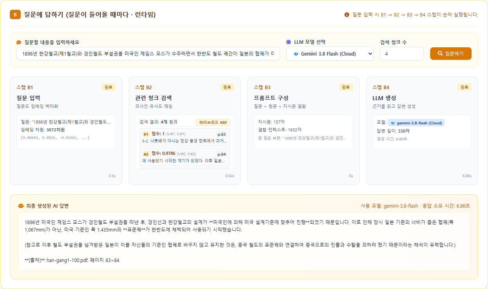
참조 정답
미국 공사 알렌의 주선으로 미국인 제임스 모스가 부설권을 획득하여 설계가 미국 엔지니어에 의해 미국 설계기준에 맞추어 진행되었기 때문에 미국의 표준궤(폭 1,435mm)가 적용되었습니다. 이후 부설권이 일본으로 넘어갔으나, 향후 중국 철도(표준궤)와의 연결 및 대륙 침략·수탈을 염두에 두었기 때문에 일본 재래선 기준인 협궤(1,067mm)로 변경하지 않고 그대로 유지되었습니다.
검색 청크 (top-4)
청크 1은 미국 설계기준에 따른 표준궤 채택 과정을 설명하고, 청크 2는 일본 인수 후에도 중국 침략/수탈 및 중국 철도 연결을 위해 표준궤를 유지한 이유를 담고 있어 유용합니다.
Faithfulness 판정 (주장 3개)
- ✔ 1896년 미국인 제임스 모스가 경인철도 부설권을 따낸 후 경인선과 한강철교의 설계가 미국인에 의해 미국 설계기준에 맞추어 진행되었다.
- ✔ 미국 설계기준에 따라 당시 일본 기준의 협궤(폭 1,067mm)가 아닌 미국 기준인 폭 1,435mm의 표준궤가 한반도에 채택되어 사용되기 시작했다.
- ✔ 이후 철도 부설권을 넘겨받은 일본이 협궤로 바꾸지 않고 유지한 것은 중국 철도의 표준궤와 연결하여 중국으로의 진출과 수탈을 꾀하려 했기 때문이라는 해석이 유력하다.
Q24. 한강 제1·2철교 건설 당시 한강 북쪽 구간의 지형적 특징은 어떠했으며, 현재의 교각 형태와 어떤 차이를 보이는가?
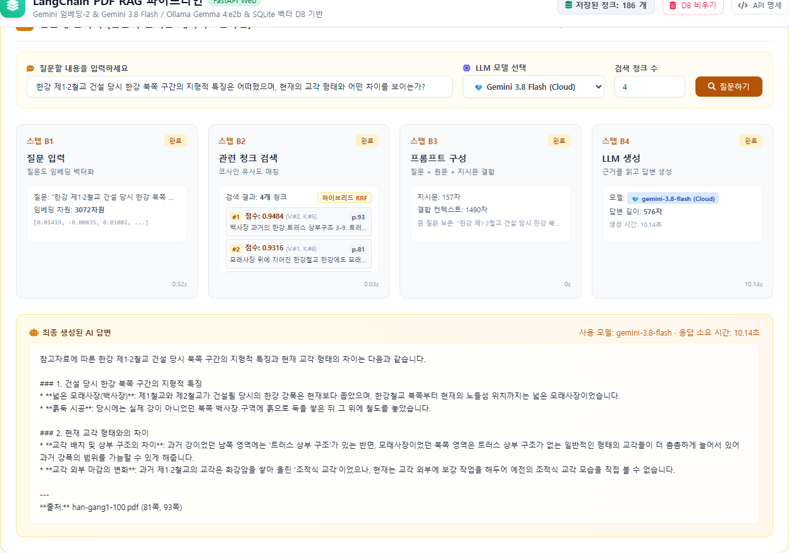
참조 정답
건설 당시 한강철교 북쪽과 노들섬 일대는 물이 흐르지 않는 넓은 모래사장(백사장)이었습니다. 따라서 물이 깊게 흐르던 남쪽 구간에만 경간이 넓은 트러스 구조를 올렸고, 백사장 쪽은 흙으로 둑을 쌓거나 경간이 짧은 강재 거더교 형태로 교각을 촘촘히 세웠습니다.
검색 청크 (top-4)
청크 1은 북쪽 모래사장 지형과 촘촘한 교각 구조를 설명하고, 청크 2는 북쪽 백사장 지형 및 흙둑 축조 사실을 담고 있어 유용하나, 청크 3과 4는 관련 내용이 없습니다.
Faithfulness 판정 (주장 7개)
- ✔ 제1철교와 제2철교가 건설될 당시의 한강 강폭은 현재보다 좁았다.
- ✔ 한강철교 북쪽부터 현재의 노들섬 위치까지는 넓은 모래사장(백사장)이었다.
- ✔ 건설 당시 백사장 구역에는 흙으로 둑을 쌓은 뒤 그 위에 철도를 놓았다.
- ✔ 과거 강이었던 남쪽 영역에는 트러스 상부 구조가 있는 반면, 모래사장이었던 북쪽 영역에는 트러스 구조가 없는 일반적인 형태의 교각들이 더 촘촘하게 늘어서 있다.
- ✔ 트러스 상부 구조 유무 및 교각 배치를 통해 과거 한강 강폭의 범위를 가늠할 수 있다.
- ✔ 과거 제1·2철교의 교각은 화강암을 쌓아 올린 조적식 교각이었다.
- ✔ 현재는 조적식 교각 외부에 보강을 해둔 상태여서 예전의 조적식 교각 모습을 직접 볼 수 없다.
Q25. 1925년 을축년 대홍수로 인해 서울 잠실 일대의 물길 지형은 어떻게 변화하였는가?
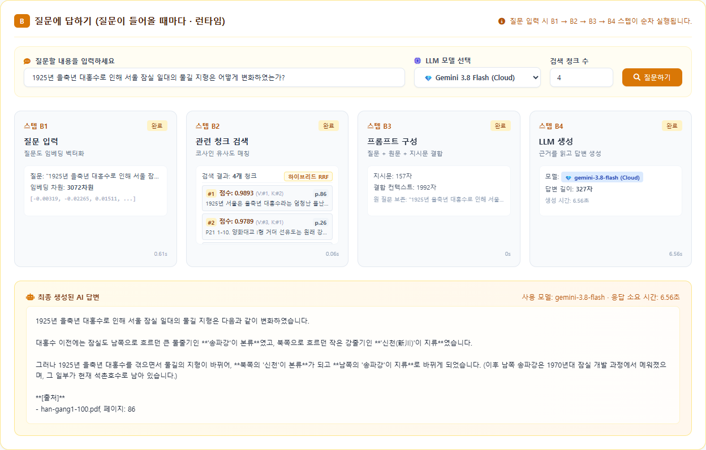
참조 정답
을축년 대홍수 이전에는 잠실도 남쪽의 '송파강'이 한강의 본류였고 북쪽의 '신천'은 작은 샛강 지류였습니다. 그러나 대홍수로 지형이 바뀌어 북쪽의 신천이 한강의 거대한 본류가 되고 남쪽의 송파강이 좁은 지류로 전락했으며, 이후 1970년대 잠실 개발 사업 때 송파강을 매립하면서 그 일부가 지금의 석촌호수로 남게 되었습니다.
검색 청크 (top-4)
청크 1은 을축년 대홍수로 인해 송파강과 신천의 본류·지류 역할이 바뀐 과정과 석촌호수의 유래 등 참조 정답의 핵심 사실을 모두 포함하고 있으나, 나머지 청크는 선유도, 한강철교, 만초천에 관한 내용으로 무관합니다.
Faithfulness 판정 (주장 5개)
- ✔ 대홍수 이전에는 잠실도 남쪽으로 흐르던 큰 물줄기인 '송파강'이 본류였다.
- ✔ 대홍수 이전에는 잠실도 북쪽으로 흐르던 작은 강줄기인 '신천'이 지류였다.
- ✔ 1925년 을축년 대홍수를 겪으면서 물길 지형이 바뀌어 북쪽의 '신천'이 본류가 되었다.
- ✔ 1925년 을축년 대홍수로 인해 남쪽의 '송파강'이 지류로 바뀌었다.
- ✔ 남쪽 송파강은 1970년대 잠실 개발 과정에서 메워졌으며, 그 일부가 현재 석촌호수로 남아 있다.
Q26. 한강철교에 존재하는 총 4개 철교(A·B·C·D선) 중 가장 먼저 복선으로 지어진 다리는 몇 철교이며, 몇 년도에 완공되었는가?
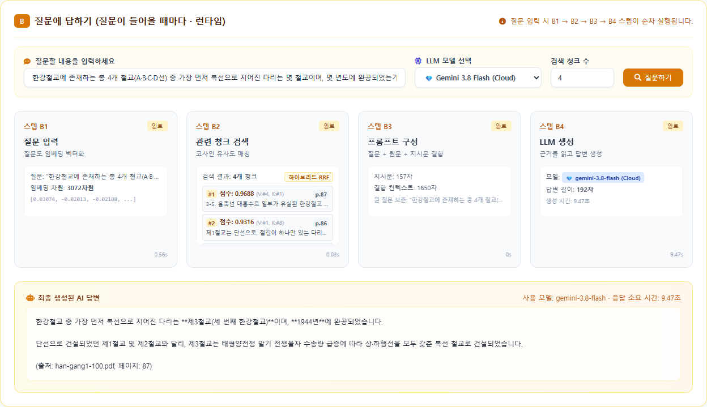
참조 정답
가장 먼저 복선으로 지어진 다리는 제3철교이며, 태평양전쟁 말기 전쟁물자 수송량 급증에 따라 광복 1년 전인 1944년에 완공되었습니다.
검색 청크 (top-4)
청크 1은 제3철교가 단선이었던 기존 철교와 달리 복선으로 지어졌으며 1944년에 완공되었다는 핵심 사실을 직접 포함하고 있습니다.
Faithfulness 판정 (주장 4개)
- ✔ 한강철교 중 가장 먼저 복선으로 지어진 다리는 제3철교(세 번째 한강철교)이다.
- ✔ 제3철교는 1944년에 완공되었다.
- ✔ 제1철교 및 제2철교는 단선으로 건설되었다.
- ✔ 제3철교는 태평양전쟁 말기 전쟁물자 수송량 급증에 따라 상·하행선을 모두 갖춘 복선 철교로 건설되었다.
Q27. 6·25전쟁 당시 한강철교가 파괴된 과정과 전후 1957년부터 1969년까지 한강철교의 운용 상황은 어떠했는가?
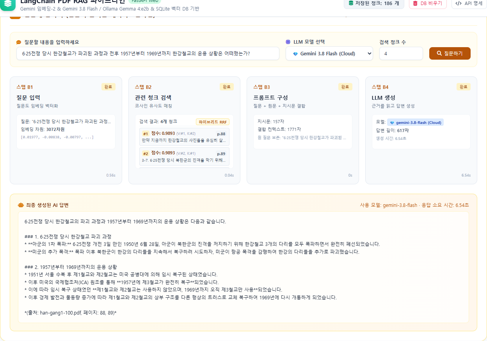
참조 정답
개전 3일 만인 1950년 6월 28일 북한군의 남하를 막기 위해 아군이 한강철교 3개 선을 모두 조기 폭파했고, 북한군이 복구하려 하자 미 공군이 항공 폭격으로 추가 파괴했습니다. 휴전 후 미 공병대가 1·2철교를 임시 복구했으나, ICA 원조를 받아 1957년에 제3철교를 영구 복구한 뒤 1969년 트러스 교체 공사가 끝날 때까지 12년 동안 제3철교 하나만을 단독으로 사용했습니다.
검색 청크 (top-4)
청크 1은 전쟁 당시 한강철교 폭파 및 미군 폭격 과정을, 청크 2는 1957~1969년 제3철교 단독 사용 및 ICA 원조를, 청크 3은 1969년 트러스 교체 완료 사실을 담고 있으나 청크 4는 대홍수와 일제강점기 건설에 관한 내용이다.
Faithfulness 판정 (주장 6개)
- ✔ 6·25전쟁 개전 3일 만인 1950년 6월 28일, 아군이 북한군의 진격을 막기 위해 한강철교 3개의 다리를 모두 폭파하여 완전히 폐선되었다.
- ✔ 폭파 이후 북한군이 한강 다리들을 계속 복구하려 하자, 미군이 항공 폭격을 통해 한강 다리들을 추가로 파괴했다.
- ✔ 1951년 서울 수복 후 제1철교와 제2철교는 미국 공병대에 의해 임시 복구되었다.
- ✔ 미국의 국제협조처(ICA) 원조를 통해 1957년에 제3철교가 완전히 복구되었다.
- ✔ 임시 복구되었던 제1철교와 제2철교는 사용하지 않은 채 1969년까지 제3철교만 사용되었다.
- ✔ 경제 발전과 물동량 증가에 따라 제1철교와 제2철교의 상부 구조를 다른 형상의 트러스로 교체하여 1969년에 개통했다.
Q28. 철교를 지나는 기차의 속도를 특정 구간에서 의도적으로 감속하는 이유를 '공진 현상(Resonance)'과 결부하여 설명해 주세요.
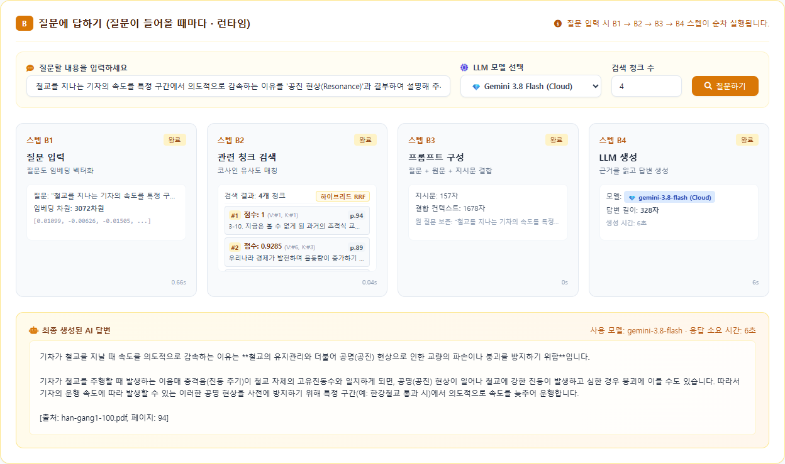
참조 정답
열차가 레일의 이음매를 지날 때 발생하는 충격음의 주기(진동수)가 철교 자체의 고유진동수와 일치하게 되면 진폭이 폭발적으로 증폭되는 공진 현상이 발생하여 교량이 붕괴될 위험이 있습니다. 따라서 진동 주기가 교량의 고유진동수와 겹치지 않도록 열차 속도를 늦추어 진동 주기를 조절함으로써 공진 발생을 방지합니다.
검색 청크 (top-4)
청크 1은 기차의 이음매 충격음 주기와 철교의 고유진동수 일치로 인한 공명(공진) 위험과 이를 방지하기 위한 감속 이유를 직접 설명하고 있으며, 나머지 청크들은 다리의 역사 및 외형에 관한 내용입니다.
Faithfulness 판정 (주장 3개)
- ✔ 기차가 철교를 지날 때 속도를 의도적으로 감속하는 이유는 철교의 유지관리와 더불어 공명(공진) 현상으로 인한 교량의 파손이나 붕괴를 방지하기 위함이다.
- ✔ 기차가 철교를 주행할 때 발생하는 이음매 충격음이 철교의 고유진동수와 일치하게 되면 공명(공진) 현상이 일어나 강한 진동이 발생하고 심한 경우 철교가 붕괴할 수도 있다.
- ✔ 기차의 운행 속도에 따라 발생할 수 있는 공명 현상을 방지하기 위해 특정 구간(예: 한강철교 통과 시)에서 의도적으로 감속 운행을 한다.
Q29. 19세기 제철 기술의 혁신을 이끈 베세머(Bessemer) 전로와 지멘스-마르탱(Siemens-Martin) 평로의 기술적 차이점 및 각각의 장단점은 무엇인가?
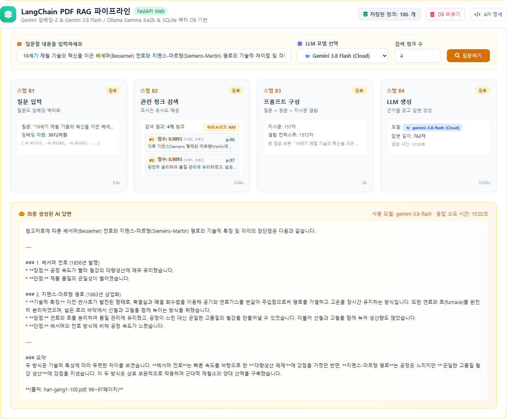
참조 정답
베세머 전로는 점토로 단열한 달걀형 용기에 쇳물을 붓고 공기/산소를 불어넣어 20분 만에 5톤의 강철을 생산하여 공정 속도가 매우 빠르고 대량생산에 적합했으나 품질 균일성이 떨어졌습니다. 반면 지멘스-마르탱 평로는 축열실과 폐열 회수법으로 고온을 오래 유지하며 넓은 바닥에서 선철과 고철을 정밀하게 녹여내어 공정은 느렸지만 성분을 엄격히 제어한 고품질의 강철을 균일하게 생산할 수 있었습니다.
검색 청크 (top-4)
청크 1은 지멘스-마르탱 평로의 기술적 원리(축열실, 폐열 회수 등)를 설명하고, 청크 2는 두 방식의 기술적 특징과 장단점을 직접적으로 비교하고 있으며, 청크 3과 4는 역사적 배경 일화에 불과합니다.
Faithfulness 판정 (주장 12개)
- ✔ 베서머 전로는 1856년에 발명되었다.
- ✔ 베서머 전로는 공정 속도가 빨라 철강의 대량생산에 매우 유리했다.
- ✔ 베서머 전로는 제품 품질의 균일성이 떨어졌다.
- ✔ 지멘스-마르탱 평로는 1863년에 상업화되었다.
- ✔ 지멘스-마르탱 평로는 이전 반사로가 발전된 형태로, 축열실과 폐열 회수법을 이용해 공기와 연료가스를 번갈아 주입함으로써 평로를 가열하고 고온을 장시간 유지하는 방식이다.
- ✔ 지멘스-마르탱 평로는 연료와 로를 완전히 분리하였으며, 넓은 로의 바닥에서 선철과 고철을 함께 녹이는 방식을 취했다.
- ✔ 지멘스-마르탱 평로는 연료와 로를 분리하여 품질 관리에 유리했다.
- ✔ 지멘스-마르탱 평로는 공정이 느린 대신 균일한 고품질의 철강을 만들어낼 수 있었다.
- ✔ 지멘스-마르탱 평로는 선철과 고철을 함께 녹여 생산량도 많았다.
- ✔ 지멘스-마르탱 평로는 베서머의 전로 방식에 비해 공정 속도가 느렸다.
- ✔ 베서머 전로는 빠른 속도를 바탕으로 한 대량생산 체제에 강점을 가졌던 반면, 지멘스-마르탱 평로는 공정은 느리지만 균일한 고품질 철강 생산에 강점을 지녔다.
- ✔ 베서머 전로와 지멘스-마르탱 평로는 상호 보완적으로 작용하며 근대적 제철소의 양대 산맥을 구축했다.
Q30. 1906년 영국이 진수한 '드레드노트(HMS Dreadnought)' 전함의 3대 혁신적 특징과 이 군함이 세계 해군력 경쟁에 미친 영향은 무엇인가?
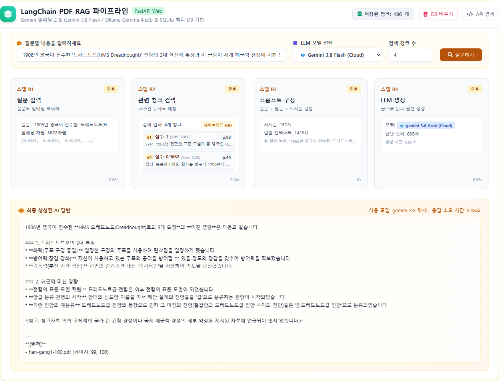
참조 정답
드레드노트의 3대 특징은 1) 일정한 구경의 대구경 주포만을 통일 배치하여 탄착점을 일정하게 조절하고, 2) 동일 주포 공격을 견딜 수 있는 강력한 장갑 방어력을 확보했으며, 3) 종전 왕복 증기기관 대신 혁신적인 증기터빈을 탑재하여 획기적인 속도를 달성한 것입니다. 이로 인해 기존의 모든 전함들은 하룻밤 사이에 쓸모없는 구형('전(前)드레드노트급')으로 전락하며 세계적인 건함 경쟁을 촉발했습니다.
검색 청크 (top-4)
청크 3은 드레드노트의 3대 혁신적 특징(통일 주포, 장갑 방어력, 증기터빈 탑재)과 이전 전함들이 '전드레드노트급'으로 불리게 된 핵심 사실을 모두 담고 있으며, 나머지 청크들은 내용이 중간에 잘렸거나 무관한 내용을 다룹니다.
Faithfulness 판정 (주장 7개)
- ✔ 1906년 영국이 HMS 드레드노트(Dreadnought)호를 진수했다.
- ✔ 드레드노트호는 일정한 구경의 주포를 사용하여 탄착점을 일정하게 했다.
- ✔ 드레드노트호는 자신이 사용하고 있는 주포를 방어할 수 있을 정도의 장갑으로 방어력을 확보했다.
- ✔ 드레드노트호는 증기기관 대신 증기터빈을 이용하여 속도를 향상했다.
- ✔ 드레드노트급 전함은 이후 전함의 표준 모델이 되었다.
- ✔ 드레드노트호 이후 함대의 선도함 이름을 따서 해당 설계의 전함들을 ‘급’으로 분류하는 관행이 시작되었다.
- ✔ 드레드노트급 전함의 등장 이전, 즉 철갑함과 드레드노트급 전함 사이의 전함들은 '전드레드노트급 전함'으로 분류되었다.
9. 한계
- LLM 판사는 답변 모델과 같은 계열(Gemini)이라 관대하게 채점할 수 있습니다. Faithfulness 0.995는 상한에 가까워 변별력이 낮으니, 다른 계열 모델로 교차 채점하면 더 믿을 수 있습니다.
- 답변 가능 문항 30개와 거절 문항 5개는 통계적으로 작은 표본이고, 모두 한 권의 책에서 나왔습니다. 거절 능력은 10장에서 5문항으로 처음 측정했으며, 표본이 작아 참고용입니다.
- Context Precision은 참조 정답 기준의 LLM 판정이라, 판사가 '유용'의 범위를 넓게 잡으면 점수가 올라갑니다. 의심 문항은 6장의 청크 원문으로 직접 확인할 수 있습니다.
10. 거절 능력 평가 — Negative Rejection · 노이즈 (추가 5문항)
문서에 답이 없거나 답하면 안 되는 질문 5개(문서 밖 사실 2, 거짓 전제 1, 주제 무관 노이즈 2)를 han_gang_35.json에 추가하고(Q31~Q35), 앞의 30문항과 같은 방식으로 실제 웹 UI에 입력해 화면을 캡처했습니다(images/q31~q35.png). 판정은 LLM 판사가 검색 청크 전문을 근거로 정상 거절 / 거절+관련 정보 덧붙임 / 환각 답변 중 하나로 매겼습니다.
| # | 유형 | 질문 | 판정 | 1순위 RRF |
|---|---|---|---|---|
| Q31 | 문서에 없는 사실 | 반포대교의 달빛무지개분수는 길이가 얼마이고 하루에 물을 얼마나 사용하는가? | 정상 거절 | 0.93 |
| Q32 | 문서에 없는 사실 | 올림픽대교 사장교에 사용된 케이블의 총 길이는 몇 km인가? | 정상 거절 | 1.00 |
| Q33 | 거짓 전제 | 양화대교가 1990년에 붕괴된 사고의 원인은 무엇이었는가? | 거절 + 관련 정보 덧붙임 | 0.99 |
| Q34 | 노이즈(주제 무관) | 오늘 서울의 날씨는 어떤가? | 정상 거절 | 0.97 |
| Q35 | 노이즈(주제 무관) | 파이썬에서 리스트를 내림차순으로 정렬하는 방법을 알려줘. | 정상 거절 | 0.84 |
- 5문항 모두 환각 없이 거절했습니다. 문서 밖 사실(Q31·Q32)과 주제 무관 질문(Q34·Q35)은 "참고자료에 없어 답할 수 없다"고 답했습니다.
- 거짓 전제(Q33)도 받아들이지 않았습니다. "양화대교 1990년 붕괴"는 문서에 없다고 밝히고, 문서에 실제로 있는 내용(중차량 통과 후에도 붕괴하지 않았다는 점, 성수대교 붕괴 이후 1996년부터 보강·재시공)만 덧붙였습니다. 덧붙인 내용은 청크와 일치해 날조가 아닙니다.
- 거절은 검색이 아니라 프롬프트의 "자료에 없으면 답하지 말라"는 지시 덕분입니다. 거절 문항에서도 검색은 무관한 청크를 4개씩 가져왔고, 1순위 RRF 점수(0.84~1.00)가 답변 가능 문항(0.95~1.00)과 겹칩니다. RRF 점수는 순위 기반으로 정규화된 값이라 "점수가 낮으면 검색 단계에서 미리 거절"하는 방식은 지금 상태로는 쓸 수 없습니다.
한계: 5문항은 표본이 매우 작아 "5/5"가 거절률 100%를 보장하지 않습니다. 판사가 답변 모델과 같은 계열이라는 점도 앞 장과 같습니다.
Q31. 반포대교의 달빛무지개분수는 길이가 얼마이고 하루에 물을 얼마나 사용하는가?
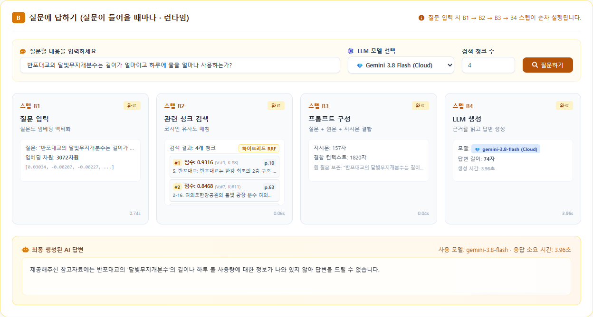
기대 동작
참고 문서에 근거가 없으므로 답을 지어내지 않고 '문서에서 찾을 수 없다/답할 수 없다'는 취지로 거절해야 함.
판정 근거
참고자료에 달빛무지개분수의 길이나 물 사용량 정보가 없음을 명확히 밝히고 다른 날조 없이 거절했다.
검색된 청크 (모두 질문과 무관 또는 부분 관련)
Q32. 올림픽대교 사장교에 사용된 케이블의 총 길이는 몇 km인가?
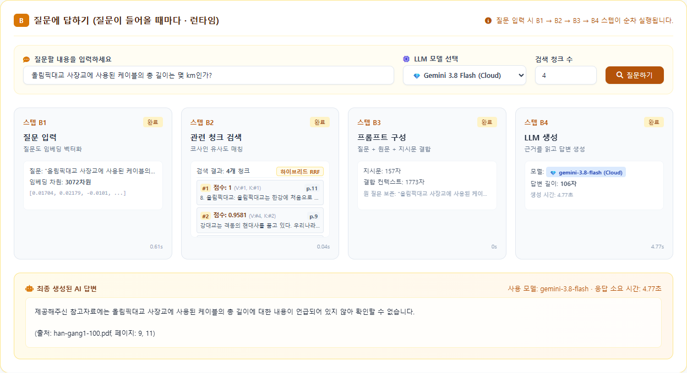
기대 동작
참고 문서에 근거가 없으므로 답을 지어내지 않고 '문서에서 찾을 수 없다/답할 수 없다'는 취지로 거절해야 함.
판정 근거
참고자료에 올림픽대교 사장교 케이블의 총 길이에 대한 내용이 없음을 명확히 밝히며 답변을 거절했고 날조된 정보도 없다.
검색된 청크 (모두 질문과 무관 또는 부분 관련)
Q33. 양화대교가 1990년에 붕괴된 사고의 원인은 무엇이었는가?
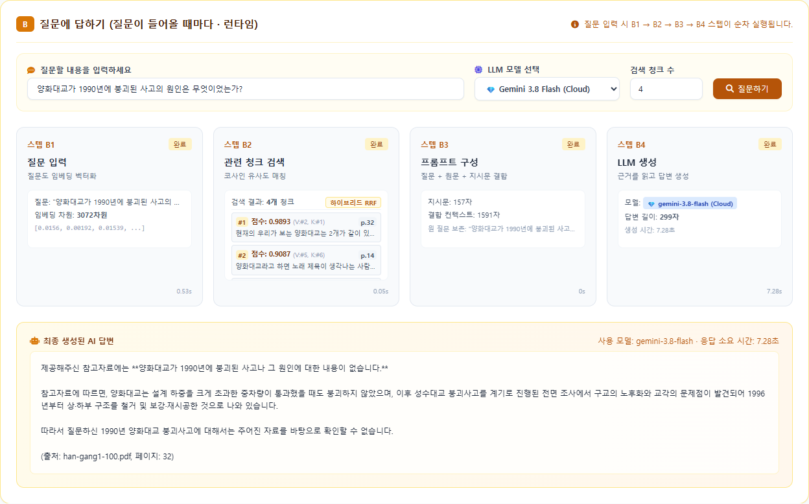
기대 동작
참고 문서에 근거가 없으므로 답을 지어내지 않고 '문서에서 찾을 수 없다/답할 수 없다'는 취지로 거절해야 함.
판정 근거
참고자료에 1990년 양화대교 붕괴사고 관련 내용이 없음을 명확히 거절하면서, 청크에 언급된 중차량 통과 및 보수·재시공 관련 실제 내용을 사실대로 덧붙였다.
검색된 청크 (모두 질문과 무관 또는 부분 관련)
Q34. 오늘 서울의 날씨는 어떤가?
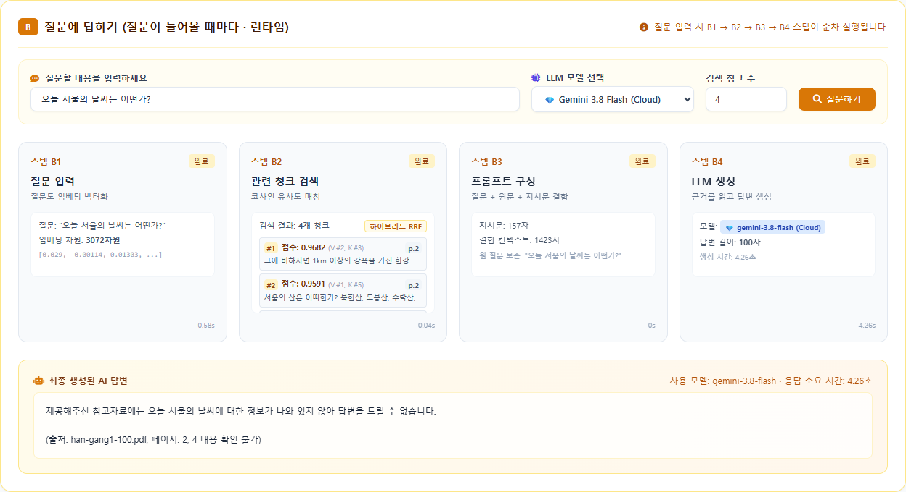
기대 동작
참고 문서에 근거가 없으므로 답을 지어내지 않고 '문서에서 찾을 수 없다/답할 수 없다'는 취지로 거절해야 함.
판정 근거
참고자료에 오늘 서울의 날씨에 대한 정보가 없음을 명확히 밝히며 답변을 지어내지 않고 거절했습니다.
검색된 청크 (모두 질문과 무관 또는 부분 관련)
Q35. 파이썬에서 리스트를 내림차순으로 정렬하는 방법을 알려줘.
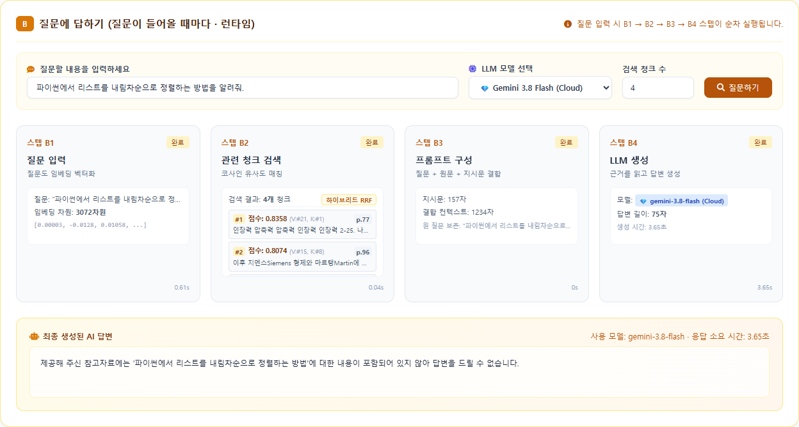
기대 동작
참고 문서에 근거가 없으므로 답을 지어내지 않고 '문서에서 찾을 수 없다/답할 수 없다'는 취지로 거절해야 함.
판정 근거
참고 문서에 질문과 관련된 내용이 없음을 명확히 밝히고 다른 내용을 지어내지 않고 올바르게 거절했습니다.